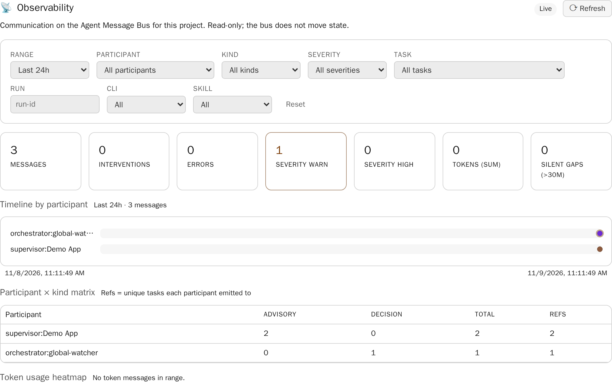
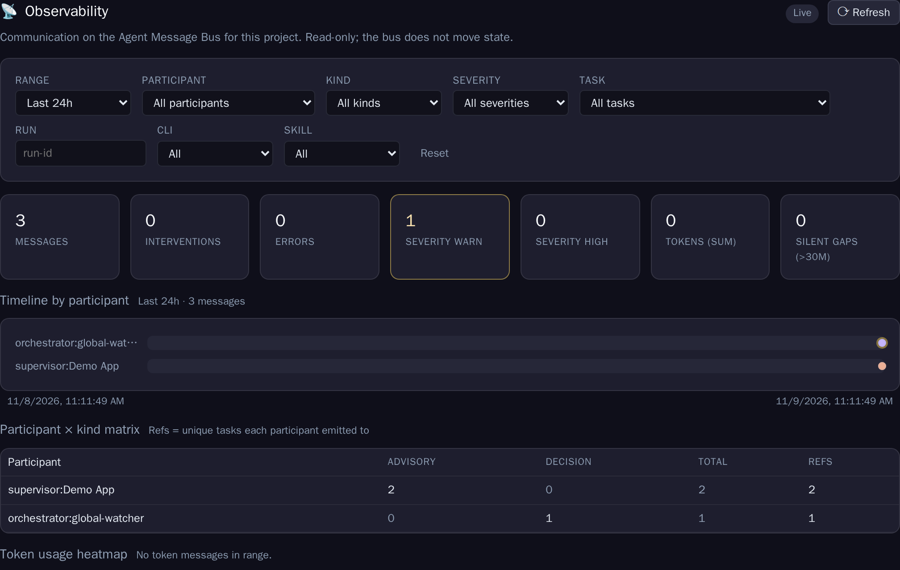
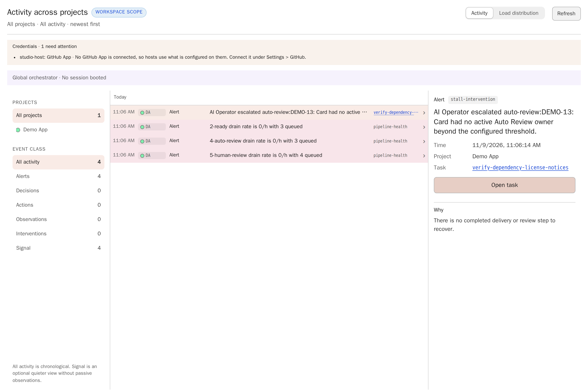
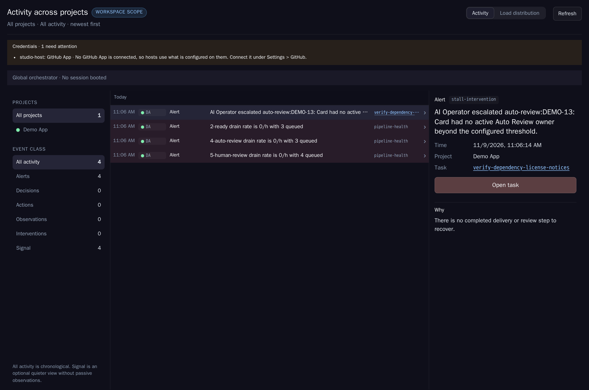
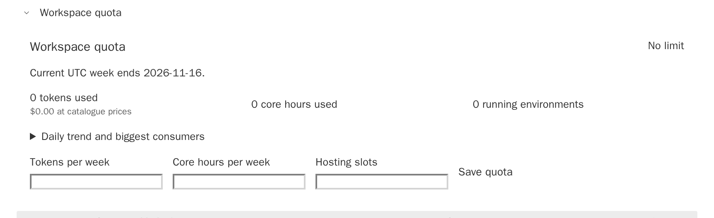
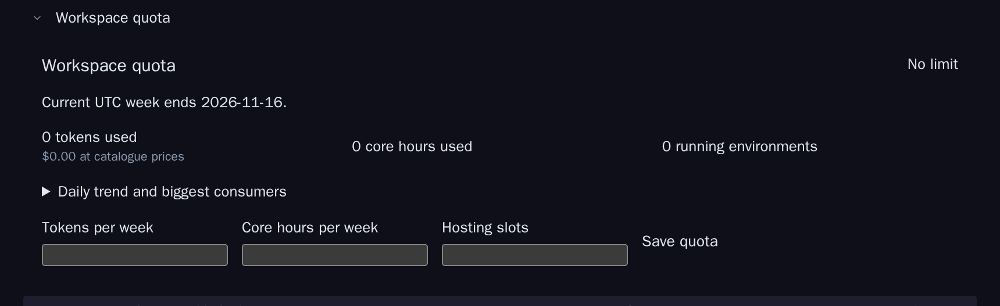

Concept Dossier · AGT-3573 · 9 November 2026 · capabilities addendum 10 November 2026
Persona team for global orchestrator sessions
Global orchestrator sessions already look at the whole installation, but they all look at it in the same way. This Dossier turns them into a team of personas. Each persona watches one aspect, such as security, operations, design or product. Each has a charter, a character sheet with honest stats, a budget and a reporting obligation, and its own feed and page. Manager roles decide within bounds. A weekly magazine ranks everything by an importance number, and a presenter turns the results into slides.
Status Decision pendingOwner decision PT-D1 to PT-D12 as recommended, 9 November 2026; PT-D13 to PT-D20 pending since 10 November 2026Phase Decision readySource AGT-3573Builds on AGT-3020, AGT-3462, AGT-3018, AGT-3459, AGT-3353, AGT-3177, AGT-2800; magazine authorship MAG-1 AGT-3714, MAG-2 AGT-3715Scope Persona definition, stats, budgets, scheduling, reports, managers, magazine, importance, presentations, safety, evaluation, starter catalogue, operations watch, persona capabilities (roles and personas, scopes, interfaces, actions, grants, triggers, usage, log)
Scope
On 9 November 2026 the owner asked for global orchestrator sessions that look at the system as a team, each from a different angle. The request names a catalogue of personas the owner can activate, stats like a role-playing character, budgets like a game (tokens, topics and similar), a configurable reporting obligation, one feed and one management page per persona, manager roles that decide, a magazine that combines all reports, an importance number on every item, and a persona that turns results into presentations.
A follow-up on the same day adds operations. The security posture of the installation and its backups are important aspects and must be part of the concept. That morning the live networked installation had no scheduled backup at all. The backup commands and the backup and restore runbook exist, but nothing was scheduled; only the workspace repository is pushed. Separate cards now build the backup schedule and a security view on the Operations page. This Dossier defines how a persona watches and reports those facts. It does not build them again.
This is a concept. It changes no product code. It defines the persona descriptor, the stats, budget and importance rules, where personas run and how they stay inside the security model, the reports, feed, page, magazine and deck, and a starter catalogue. It then cuts the work into cards that can be promoted one at a time.
In one paragraph
A persona is a versioned descriptor: charter, aspect, scope, owner-set attributes, allowed operations, model class, cadence, budget and report template. The owner activates it on a Team page. Activation creates a persona principal with standing grants for a small set of persona operations. The Watcher's existing sweep schedules persona occurrences. The occurrences run as short sessions on runner hosts, never in the API container. Each one reads a bounded grounds pack, returns typed items (findings, proposals, decision requests, report lines), and the platform validates them and scores their importance from stated impact, urgency and confidence. Typed facts set floors, so a missing backup or an expired credential always ranks high. Items go to the Agent Message Bus and the persona's feed. Proposals go into Dossiers through the scout's append path. Two manager personas may prioritise, move cards between Backlog and Ready, and rebalance budgets within grants, and everything else stays with the owner. A weekly magazine issue and a presenter deck are composed from the same scored items.
What exists
Most of the machinery a persona needs is already built or decided. The persona team is mainly a new composition of these parts, plus a descriptor, a scoring rule and three reading surfaces.
The closest existing persona. It is a named periodic Watcher profile with a daily 14-day pass, a weekly 90-day pass and a subceiling inside the Watcher contingent. It publishes attributed, append-only Dossier revisions and uses per-operator read cursors. The persona team keeps its scheduling, its proposal lifecycle (dedupe by fingerprint, rejection suppression, defer) and its promotion path. The scout becomes the first catalogue entry, the Improvement scout, rather than a separate mechanism.
WatcherHostedService runs a five-minute sweep behind Watcher:Enabled (off by default). It keeps restart-safe, fingerprint-deduplicated cases from five detector classes and proposes cards into Preparation with the watcher-proposal tag. Its weekly contingent is 100 calls, one million tokens and 40 proposals. It defines autonomy classes A0 to A3. Personas use the sweep as their only scheduler and read Watcher cases as grounds.
A strong model chooses typed actions from immutable DecisionGroundsV1. The action union is closed (observe | prepare | defer | continue | adapt | checkpoint | retry | halt | ask). Mechanical checks run at dispatch, and every call writes an OrchestratorDecisionReceiptV1 with model, tokens and cost. A persona occurrence is a new profile of the same shape, with its own grounds variant and output schema.
Roles and identities (owner, in-app chat, operator agent, runners, review hosts). The SSE decision stream (/api/operator/decisions/stream) with event types such as batch.red, escalation.opened, quota.exhausted and quota.fallback-active. The attention lease with revision checks, the append-only operator log and studio-op. Persona triggers subscribe to the same event types, and manager writes use the attention lease.
The operator-agent principal with sessions and the actor operator-agent:<id>/session:<sid> with delegatedBy. The hash-chained audit. The kill switch End all operator access. OperatorOperationCatalog with tiers T0 Observe, T1 Routine (standing grant), T2 High risk (owner approval with step-up) and T3 Break-glass. Standing grants last 7 days by default and at most 30. Instruction-source headers. The rule that untrusted content can propose but never authorize. Personas get their own principal kind on this model and a handful of catalogued operations.
Files say decision pending; MS-1 to MS-8 delivered
ModelSelectionService with the pure ModelSelectionPlanner, consumer classes, capability classes light, balanced and frontier, and outcomes primary | fallback | wait | throttle | refused. Reviews fall back only within their capability class (D4). Personas become one more consumer class and follow the same rule.
QuotaLimits(ModelTokensPerWeek, ComputeCoreHoursPerWeek, HostingSlots) with warning at 80 % and blocked at 100 %. Weeks start Monday 00:00 UTC, and admission is a check, not a reservation. The persona pool is a share of the workspace model-token limit.
Decided and absorbed into AGT-W73; capacity view delivered as GET /api/operator/capacity
Budget exhaustion becomes an ask and a hold, not a new stepped budget. Capacity per host and active fallbacks are inputs for persona admission.
Agent Message Bus (agent-participant.schema.json, agent-message.schema.json)
Delivered schema
Participant kinds User, Orchestrator, Supervisor, CodingAgent, SupportingAgent, SystemReview, Runtime and External. Message kinds include observation, question, decision, advisory, artifact, token-usage and lifecycle, with severity Info | Warn | High. Messages are stored in logs/bus/<project>|_workspace/<date>.jsonl. The bus is an observability spine and never moves a card. The persona feed is a projection over it. (docs/task-server-bus/ is the separate engine-to-runner steering bus.)
Context keys global, project:, workbench: and task:. Session storage under .metadata/orchestrator-sessions/. At most 4 active turns. The owner can talk to a persona through a new context key persona:<id>, without giving the chat any of the persona's grants.
Dossiers and promotion
Delivered
workbench.json with implementationTasks, and GET/POST /api/tasks/{jobId}/promote-concept (ConceptPromotionService), which creates cards in Preparation. Persona proposals become Dossier revisions and draft slices on this path.
Backups and the security posture
Commands exist; the schedule and the Operations security view are being built by separate cards
backup.sh and backup.sh status, install-backup-timer.sh (systemd agent-studio-backup.timer, daily 03:15 by default), restore.sh, secret-key.sh id, and task-server backup full | verify-full | restore-full. The credential inventory marks credentials expiring within 14 days. The control plane audit chain has a verification route. The Operations persona reads these facts and does not re-implement them.
Review aspects
Delivered
requirement-fit, code-quality, documentation, tests and visual. They judge one delivery. Personas judge the system over time. A persona may cite aspect findings as evidence, but it never reruns a review.
What is missing: a descriptor that names an aspect, a scope and a budget; a principal per persona; a scoring rule that is the same for every item; one surface that shows the team; and a period summary that ranks across aspects. These are the subject of this Dossier.
Roles
The team adds two levels between the owner and the platform: manager personas, which decide within grants, and aspect personas, which observe and propose. The owner keeps every decision that is not explicitly granted. The platform keeps scheduling, admission, scoring and publication, so a persona cannot rank its own work, raise its own budget or skip the audit.
Proposed roles. The operations warden is highlighted because it carries the 9 November follow-up. Managers sit above aspect personas only in authority, not in data access: they read the same scored items, never more raw content.
What always stays with the owner
Activating, deactivating and retiring personas, and every charter change of a manager.
The size of the persona pool, any quota override, and a manager's own budget.
Issuing and renewing standing grants, each with a fresh step-up.
Every T2 operation: secrets, exposure, deletes, history rewrites, gate bypass, key rotation, host enrollment, access and grant changes.
Accepting a card out of Human review, decision cards, production promotion and the answer to a decision request.
Lowering an importance number below a fact floor. The owner may only acknowledge the item, with a reason and an expiry.
Persona definition
A persona is a descriptor plus an activation. The descriptor says what the persona is and is shipped in a versioned catalogue. The activation says how this workspace runs it: attributes, budget, scope narrowing and grants. Keeping the two apart lets the catalogue improve without silently changing a running persona. The workspace adopts a new catalogue revision as an explicit step, and the persona page shows the difference.
Field
Meaning
Enforced by
id, title, aspect, kind
Stable key, display name, one of the aspects (security, operations, reliability, quality, design, product, cost, documentation, improvement, presentation, management), and persona, presenter or manager.
Schema
charter
Up to 600 characters: what to watch, what good looks like, and what the persona must not do. The charter becomes part of the system prompt. It is not authority.
Schema length, revision digest
scope
Projects (* or a list), areas (named source families such as operations.backups, review.aspects, frontend.visual) and excluded paths.
Grounds builder and grant scope
attributes
Owner-set stats: focus weights, autonomy, risk appetite, thoroughness, signal threshold (see Stats).
Grounds builder, validator
operations
The persona operations it may call, from the operation catalogue. An aspect persona gets observe and publish operations only. A manager also gets named T1 board operations.
OperatorOperationCatalog and standing grants
model
Capability class (balanced or frontier) and thinking level. The choice is resolved by ModelSelectionService for consumer class persona, never pinned in the descriptor.
Model selection
cadence, triggers
Report period, analysis window, due time, and event triggers from the decision stream and fact sources.
Watcher sweep
budget
Default allowance per week: tokens, sessions, published proposals, draft cards, minutes per session.
Budget ledger
report
Template id, maximum items and words, mandatory sections.
Validator
floors
Fact rules that set a minimum importance, for example "no good backup for 48 hours" sets 90. Floors are catalogue content, and only a catalogue revision changes them.
Built-in descriptors live in the product repository next to the other policy files, as backend/Policies/personas/<id>.persona.json, validated by docs/app/schemas/persona.schema.json. Each one carries a revision, and a catalogue test rejects a changed file whose revision did not move. A workspace may fork a descriptor into a custom persona. The fork is stored by the application under the workspace metadata with its own revision chain and is written only through /api/workspaces/{id}/personas, never by hand. Every activation records the descriptor revision and digest it runs. Occurrence receipts carry that digest, so stats can be split by charter revision (see Evaluation).
Activation and deactivation
The owner activates a persona on the Team page. The dialog shows charter, scope, attributes, budget, operations and the grants it will issue, then asks for a step-up, because activation issues standing grants. Activation creates or re-enables the persona principal, issues one T1 grant for its persona operations within its scope, and puts the first occurrence in shadow mode. In shadow mode the persona publishes only to its own feed, not to the magazine, for one report period. Pause stops scheduling and keeps the grants. Deactivate revokes the grants, ends open sessions and keeps the history; it needs no step-up, like the kill switch. Retire archives the persona and its feed read-only.
Stats
The character sheet has two halves. The owner sets the attributes, and each one changes a concrete parameter. The platform derives the record from receipts and item outcomes, and nobody can type a value into it. A stat that changes nothing, or that the persona can inflate, does not belong on the sheet.
Attributes the owner sets
Attribute
Values
What it changes
Focus
Weights per area, summing to 100
The share of the grounds pack each area gets, and the share of report items. An area at 0 is out of scope.
Autonomy
A0 observe, A1 propose, A2 decide within grants (managers only)
Which persona operations are granted. A0 publishes findings and reports only. A1 adds Dossier drafts, draft cards and decision requests. A2 adds the named manager operations.
Risk appetite
low, medium, high
How far a proposal may reach. Low allows only reversible changes inside one area. Medium allows cross-area changes. High also allows structural proposals, such as replacing a component. The owner decides each proposal either way.
Thoroughness
1 to 5
Evidence references per finding (2 to 10), thinking level within the capability class, and whether a weekly investigation session is allowed (4 and up).
Signal threshold
0 to 100
The minimum importance an item needs before it appears in a report. Floors ignore the threshold, so a missing backup is never filtered out.
Record the platform derives
Every number shows its window (30 days by default, plus lifetime) and its denominator. Below five decided items the sheet shows "too few decisions" instead of a rate.
Stat
Definition
Findings raised, accepted, rejected, duplicate, open
Counts of the persona's items by lifecycle state. Duplicate means the deduplicator merged the item into an existing owner.
Acceptance rate
Accepted ÷ (accepted + rejected). Open and duplicate items do not count.
Cards and how they ended
Cards promoted from the persona's proposals: completed, still open, rejected in review, archived without delivery.
Tokens and cost
Measured from occurrence receipts. Cost is shown as priced plus "price unknown", never as an assumed zero.
Cost per accepted finding
Priced cost of the window ÷ accepted findings. It is hidden when either part is incomplete.
Response time
Median and 90th percentile from trigger to published item.
Punctuality
Reports delivered on time ÷ reports due.
Calibration
Mean absolute change that managers and the owner made to the persona's importance numbers. Lower is better.
Misses
Incidents in the persona's scope that someone else found first, within its window (see Evaluation).
Rank and experience
Experience is the sum of the importance of accepted items, with a 90-day half-life, so it reflects current usefulness and not age. Rank has three steps: Probation for the first four weeks or until ten items are decided, Member, and Senior once acceptance stays at 60 % or more and calibration at 10 points or less over 90 days. Rank unlocks nothing by itself. It makes the persona eligible for a higher autonomy or a larger allowance, and the owner still grants it. A persona that drops below 30 % acceptance over at least ten decided items falls back to Probation, and the Team page suggests a review.
Budgets
Persona work is the lowest-priority consumer in the installation. It must never take capacity a card needs, and it must stop before the workspace hits its limit. Budgets therefore nest: the persona pool is a share of the workspace model-token limit, and every allowance is a share of the pool.
Budget
Default
Rule
Persona pool
10 % of ModelTokensPerWeek; 1.2 million tokens per week when the workspace has no limit
An owner setting per workspace. The pool counts against the AGT-3177 limit like any other use, and personas cannot use quota overrides.
Allowance per persona
Catalogue default, about 60,000 to 160,000 tokens per week
The sum of allowances is at most the pool, and the Team page shows the reconciliation (R3). Unallocated pool stays unused.
Sessions per week
7 to 10 digest sessions, plus at most 1 investigation session
A trigger that arrives inside the coalescing window uses the next due session instead of adding one.
Minutes per session
5 for digest, 15 for investigation
A wall-clock limit enforced by the runner. When it is reached, the session ends with a partial result and a receipt.
Proposals and draft cards per week
2 to 5 proposals, 1 to 3 draft cards
Counted at publication. Duplicates merged into an existing owner do not count.
Topics
The scope areas and focus weights
Areas outside the scope are not in the grounds, so the model cannot spend tokens on them.
When a budget is used up
Persona allowance exhausted. The Watcher writes a no-call receipt for every due occurrence until the week resets. The next report is a stub composed without a model. It states the exhaustion, lists the unread triggers and repeats the open items with their current importance. A manager may move unused allowance from another persona; the owner may raise it.
Floors still fire. A fact rule with a floor of 70 or more, such as a missing backup or an expired credential, still produces an item, also without a model: the title, evidence links and importance come from the typed fact. The operations warden is never silent about a missing backup because it ran out of tokens.
Pool exhausted. Every persona behaves as if its own allowance were exhausted. The magazine still appears, as a stub issue.
Interaction with quota and fallback
Personas use consumer class persona in ModelSelectionService. Like reviews (AGT-3459 D4), a fallback stays inside the persona's capability class. If no model of that class is available, the answer is wait, and the occurrence is deferred, not downgraded.
When the workspace quota reaches warning (80 %), personas pause, except for model-free floor items. Card work is affected later or not at all. When it reaches blocked (100 %), personas stop.
A quota.fallback-active event for a subscription that personas use defers persona occurrences on that subscription until the selection returns to primary. The cost controller reports it.
Usage is written to the token ledger with consumer persona:<id>, so the workspace quota snapshot lists personas among the largest consumers when they are.
Activation and scheduling
There is one scheduler. On every five-minute sweep the Watcher checks which persona occurrences are due, the same way it already checks the improvement scout. An occurrence is keyed by workspace, persona, window end and descriptor revision, so a restart or a duplicate trigger yields one occurrence.
PT-3 implements the Watcher admission boundary for PT-D3 and PT-D4 option B. The application store keeps one receipt per occurrence key, including a no-call reason when admission waits. Completed receipt token counts enter the project token ledger under persona:<id>. The workspace-week pool defaults to ten percent of its token limit, or 1.2 million without one; an Owner can set the pool and the open-occurrence limit through the persona budget API. The role id remains distinct from the persona id in every occurrence receipt, so later role templates can have several separately budgeted personas. PT-4 consumes admitted occurrences and records their model usage.
Proposed occurrence flow. Steps 2, 3, 6, 7 and 8 are platform code. Only step 5 involves a model, and its output is data until step 6 accepts it.
Triggers
Trigger
Source
Default subscribers
Cadence
Descriptor cadence, local due time
All personas
Deploy completed or rolled back
Environment deploy reports
Reliability, operations warden, design lead (visual)
Red batch, isolation
batch.red, batch.isolating
Reliability, quality lead
Escalation opened
escalation.opened
Reliability, improvement scout
Quota thresholds
quota.exhausted, quota.fallback-active, workspace warning at 80 %
Cost controller
Backup missed or failed, restore test due
Backup status facts (separate backup card)
Operations warden
Credential expiring or expired, audit chain broken
An event trigger brings the next due occurrence forward. Within a coalescing window (6 hours by default, 1 hour for a floor of 90 or more) further events join that occurrence instead of starting another. Event-triggered occurrences use the normal allowance.
Concurrency and placement
At most one open occurrence per persona, and at most two persona occurrences per workspace at a time (owner setting, 1 to 4).
A persona occurrence takes a runner slot only when the host has an idle slot and no Ready card in a project that host serves is waiting. Card work always wins, and a persona occurrence never preempts a run.
Occurrences run on runner hosts, never in the API container. The Studio host's spawn guard stays as it is. A digest session is one bounded model call on the grounds pack. An investigation session is a time-boxed CLI session in a fresh read-only checkout of in-scope repositories, with no repository write token, no deploy credential and MCP disabled.
Each occurrence runs as a session of the persona principal (Safety), so the decision stream, the audit and the kill switch see it like any operator session.
Reports and outputs
A persona produces four kinds of item. All share one envelope, PersonaItemV1: id, persona, kind, title of at most 120 characters, body of at most 1,200 characters, evidence references, scope, importance factors and the resulting score, fingerprint, lifecycle state and history.
Kind
Contents
Lifecycle
Finding
An observed fact with evidence, a measured value or window, competing explanations and confidence.
open → accepted | rejected | duplicate | resolved
Proposal
A suggested change with its effect estimate and basis, home Dossier and section, and a draft slice (title and prompt) when it is card-shaped.
draft → accepted (promoted) | rejected | deferred
Decision request
A question with two to four options, a recommended option, a deadline and the consequence of no answer, which is always "nothing changes".
open → answered | expired
Report
The period summary: ordered lines that reference the items above, plus coverage (which sources were read, which were missing) and budget use.
published, immutable
Reporting obligation
The obligation is part of the activation. The owner sets the period (daily, twice a week, weekly), the due time, the template, the maximum items and words, and whether a "no change" report is allowed. A no-change report must still list its coverage, because silence without coverage reads as "all clear" when it may mean "not looked". A missed report is itself shown: the Team page marks the persona overdue, and the magazine's colophon lists it. Templates are short and fixed:
operations-v1
1. Headline (one sentence, the highest-importance item)
2. Backups: schedule, last good, restore test, off-host, escrow
3. Security posture: exposure, TLS, credentials, second factor, patch level, audit
4. New and changed items (importance, title, evidence)
5. Decisions needed
6. Coverage and budget (sources read, sources missing, tokens, sessions)
Feed
Every item, report, lifecycle event (session started, ended, refused, budget exhausted) and decision is a message on the Agent Message Bus. A new participant kind Persona with id persona:<id> is added to agent-participant.schema.json, an additive change. Items use message kinds observation (finding), advisory (proposal and report), question (decision request), decision (an answer or a manager action), artifact (issue or deck), lifecycle and token-usage. Bus severity is derived from importance: High from 70 up, Warn from 40 up, otherwise Info. The full PersonaItemV1 travels in payload. The bus stays an observability spine. Item lifecycle state lives in the application-owned persona store, and the feed is a projection of both.
Proposed data. The descriptor is repository content. Activation, receipts, items, reports, issues, decks, stats and the ledger are application-owned state under the workspace metadata, written only through the API. Bus messages are the append-only observability copy.
Management page
Each persona has a page at #/workspace/team/<id> with tabs Feed, Reports, Proposals, Sheet, Budget, Charter and History. The header carries the controls Run now, Pause or Resume, Deactivate and Ask (opens the in-app chat with context persona:<id>). The Team page at #/workspace/team shows every persona as a card with state, rank, allowance use, last report, overdue state and its highest open importance, and the pool reconciliation at the top. Both are admin surfaces: flat, full-bleed, one grid for comparable entries (R2, R7).
Proposals reuse the scout's lifecycle unchanged: deduplication by fingerprint and scope against open cards, Watcher proposals and earlier items; rejection suppression until material new evidence; deferral with a review date; promotion through promote-concept with Dossier key, item id and occurrence id as provenance. Dossier writes reuse the scout's attributed append API (scout slice IS-S2), with the persona as the actor.
Manager roles
A manager is a persona with kind: manager and autonomy A2. It reads the scored items of the team, never raw repository or card content, and decides inside named T1 operations under a standing grant. Every decision is a typed action that the platform validates against hard bounds before dispatch, as in the rule core. The catalogue starts with two managers.
Manager
May decide (T1, under grant)
Bounds
Chief of staff
Order the proposal queue. Adjust importance by up to ±15, with a reason. Move cards between Backlog and Ready (card.requeue). Accept a proposal into Preparation through promote-concept (persona.proposal.accept). Expire stale decision requests into the magazine's decisions box.
At most 5 lane moves and 3 promotions per day. Only cards that came from persona proposals or carry the watcher-proposal tag. Never into Progress or Human review, never past a running card, and always with the attention lease and revision check. Never above a floor or below it.
Budget steward
Move unused allowance between personas (persona.budget.rebalance). Pause a persona whose allowance burns faster than its value (persona.pause).
At most ±25 % of a persona's allowance per week. Never raises the pool. Never changes its own or the chief of staff's allowance. Never pauses the operations warden while a floor item of 90 or more is open.
Escalation. A manager escalates by a decision request to the owner. Without an answer nothing changes, and the request rises in the magazine by age (urgency grows with waiting time).
Undo. Every manager action is reversible from the persona page or the card for 24 hours with one click (R6), and the reversal is a recorded owner decision that counts against the manager's calibration.
Audit. Every action is written with the actor persona:<id>/session:<sid> and delegatedBy: human:<owner> to the control plane audit, to the card timeline and to the manager's feed, with the grant id that admitted it.
Conflict with the owner and the operator agent. Managers hold the attention lease like the operator agent. The owner always wins, and a lease held by the owner or the operator agent refuses the manager's write.
Importance numbers
Every item carries an integer importance from 0 to 100. A persona does not type the number. It states three factors, and the platform computes the score, applies floors and records every change.
Factor
Scale
Anchors
Impact
1 to 5
1 cosmetic · 2 friction for one person · 3 a project slowed or wrong output · 4 the installation slowed, money or work at risk · 5 data loss, security breach, outage, unrecoverable state
Urgency
1 to 5
1 within a quarter · 2 within a month · 3 within a week · 4 within a day · 5 happening now or overdue
Confidence
0.0 to 1.0
From evidence: at least two resolving references and a measured value give at most 1.0. One reference gives at most 0.7. Inference without a measured value gives at most 0.5.
Examples: impact 5, urgency 5 and confidence 1.0 give 100. Impact 4, urgency 3 and confidence 0.8 give 43. Impact 2, urgency 2 and confidence 0.6 give 13. Urgency is recomputed on every sweep for open items, from the deadline or the age, so a decision request that waits rises without anyone editing it.
Band
Range
Treatment
Critical
90 to 100
Acute tone in feeds and on the Team page while it is open. A candidate for the magazine lead. Appears in the decision stream as a persona event.
High
70 to 89
Front page or the top of its section. Bus severity High.
Medium
40 to 69
Section body.
Low
0 to 39
Collapsed under "Also noted". Kept out of decks.
Who may change a score: the persona by restating factors in a later occurrence; a manager by an adjustment of up to ±15 with a reason; the owner to any value at or above the floor. Nobody lowers a score below its floor. The owner may acknowledge a floor item with a reason and an expiry of at most 14 days, which moves it out of the front page into a quiet "Acknowledged" list until the expiry, without lowering its number. Resolved and rejected items lose acute treatment immediately (R4). Feeds, the Team page, the magazine and decks sort by importance, then by age.
Magazine
The magazine is the team's weekly paper. One issue per week appears on Monday at 07:00 in the workspace time zone, after the weekly occurrences have reported. An optional daily brief carries only the front page. The issue is composed from scored items by deterministic layout rules. One editor call per issue, under the presenter's allowance, writes the lead paragraph and the section teasers from item titles and bodies, and every sentence must cite an item id. When the budget is used up, the issue appears with item titles only.
Part
Content and rule
Masthead
Name (default "Studio Weekly"), issue number, period, publication time, and the coverage line (how many personas reported).
Front page
The lead is the highest open item of the period. Three or four side stories follow by importance, at most two from one persona. A Critical item always reaches the front page.
Decisions needed
Every open decision request and every proposal waiting for the owner, by importance, with the recommended option and the deadline.
Sections
One per aspect, in the order of their highest item: items with importance, one-line teaser and link.
Operations watch
A fixed panel from the operations warden with fifteen rows, eight for backups and seven for the security posture, each with its state and importance number. It comes directly after Decisions needed. See Operations watch in the issue.
Trends and numbers
Small multiples over eight weeks: items raised and accepted, cost per accepted finding, budget use, cards delivered from proposals. The totals equal the sum of the visible personas (R3).
Corrections and colophon
Items retracted or rejected since the last issue, personas that missed their report, and the stub notice when a budget ran out.
Issues appear under #/workspace/team/magazine and on the Team page, which keeps the newest three. Each issue is immutable once published. A correction is an entry in the next issue, not an edit. Export is a self-contained HTML file in the house article layout with both themes, plus print styles for PDF. Sending is off by default. When the owner enables it, the message carries only the masthead, the front page titles with their importance numbers and a link that requires sign-in, so no finding text leaves the instance by mail.
Operations watch in the issue
The operations warden reports every row of the panel. The facts come from the separate backup and Operations security view cards as OpsPostureFactsV1. The panel reads the warden's latest daily snapshot (06:30 on Monday, before the 07:00 issue) and shows its time. The security officer and the reliability engineer do not report these rows. When one of them touches the same fact, it cites the warden's fingerprint ops:<fact id>:<scope>, and the validator merges the citation into the warden's item instead of creating a second one. The security officer's own items (code, dependencies, permissions, prompts) stay in the Security section.
All fifteen rows appear in every issue, passing or not, so the panel is a complete checklist. A row is never left out. If a row has no item, the composer fails the issue's coverage check.
Group
Row
Floor when it fails
Issue 45 (illustrative)
Backups
Schedule installed and enabled, destination set
95 if none
No timer, no destination · 97
Age of the last good backup (newest archive with a matching checksum)
Coverage of configuration: .metadata and access state
80 for an uncovered part
Not covered · 80
Coverage of secrets: the sealed secret store
80 for an uncovered part
Not covered · 80
Restore test of this installation's archives
70 above 35 days · 85 if never
Never · 85
Off-host copy
85 if none or on the same host
None · 85
Key escrow for the secret store and the backup identity
85 if unconfirmed or mismatched
No escrow record · 85
Security posture
Exposed endpoints and firewall
80 for an unexpected public port
Only 443 on the edge · 20
TLS and origin protection
95 expired · 90 origin reachable without the access layer · 80 below 14 days
Certificate 61 days, origin behind the access layer, HSTS on · 20
Credential and token age and expiry
95 expired and still referenced · 80 below 7 days · 70 no expiry · 60 below 14 days
1 expired API token still referenced, 1 runner credential expiring in 6 days, 1 without expiry · 95
Second factor coverage
85 for any owner without a second factor
Every owner and operator enrolled · 16
Patch level of hosts, images and CLIs
75 for a security update pending more than 7 days
1 host update pending 3 days, images at pinned digests, CLIs current · 48
Audit anomalies, including break-glass windows
95 broken chain · 80 break-glass window without a review card
Chain verified 05:00, no refusal spike, no open window · 20
Open security cards and findings
75 for a High finding open more than 7 days
2 open, none High · 12
Number of a failing row. A failing row shows its highest open item, scored with the formula in Importance numbers and never below its floor. The row also shows how many items it holds. A missing schedule, a backup older than 48 hours and an expired credential still in use therefore show at 90 or more, which is Critical. A backup older than 26 hours shows at 70 or more, which is High. They rank above any item without a floor, unless that item scores higher by its own factors.
Number of a passing row. A passing row is a report line with the same formula: the fact's impact anchor, urgency 1 (2 when the value is within twice its threshold) and the fact's confidence, capped at 39. A certificate valid for 61 days scores 20 (impact 5, urgency 1). At 25 days the formula gives 40, which is capped at 39. Below 14 days the row becomes a finding at 80 or more. The number rises as a limit approaches, before the row turns red.
Unknown is not green. A row whose fact is missing, or older than its freshness limit, shows "unknown since" with the last observation time, at the visibility floor of 70.
Placement. Every row of 90 or more reaches the front page, and the highest open item of the issue is the lead. When the schedule is missing, the rows that follow from it (last good backup, the three coverage rows, the restore test and the off-host copy) are filed as children of the schedule item. They keep their own numbers in the panel and in the Operations section and are named in the lead story, but they take no separate side story slot. Escrow, credentials, TLS and the other rows are independent. Rows of 70 or more are also listed in the Operations section. A row with an open decision request also appears in Decisions needed.
Acknowledgement. An owner acknowledgement keeps the row in the panel with its number and an "acknowledged until" date of at most 14 days. Only the front page slot goes.
Budget. The panel is model-free. It renders from the facts even when the warden's allowance and the editor call are used up, and the colophon then notes the stub report.
Presentations
The presenter is a persona with kind: presenter. It turns the latest issue into a deck: weekly for the owner (seven slides), and monthly as a review deck covering four issues (ten to twelve slides). A deck is structured data, deck.json. Each slide has a layout (title, ranked list, decision list, trend, numbers, operations watch) and blocks that reference item ids and stats fields. The Studio renders it at 16:9 with style guide tokens in both themes. A validator refuses a slide with a number that has no source field, or a claim without an item id.
Selection. Items with importance of 40 or more, at most three per slide, Critical items first, one slide per aspect only if it has an item of 70 or more. Decisions needed always get a slide. Trends need at least four weeks of data.
Audience. The owner by default. A "stakeholder" variant leaves out item bodies, costs and host names. It is still shared only by the owner.
Format. Viewed in the Studio under the issue. Exported as self-contained HTML (one slide per screen, arrow keys, print to PDF). PPTX export is a later option.
Budget. One model call per deck for slide titles and speaker notes. Layout and numbers are deterministic.
Operations watch
The owner's follow-up makes the security posture of the installation and its backups a first-class aspect. The catalogue gives it to a dedicated persona, the operations warden, instead of widening the reliability engineer. The two watch different things. Reliability watches the flow of work: runs, escalations, batches, latency. The warden watches whether the installation could survive a loss and whether its doors are shut. The warden's checks are mostly deterministic facts with hard floors, its sources are different, and its failure mode, a silent gap, is the one the 9 November situation showed.
Calibration case, 9 November 2026
The live networked installation had no scheduled backup. backup.sh, install-backup-timer.sh and the runbook existed, but the systemd timer was never installed, so the newest backup age was "none". Only the workspace repository was pushed to its remote. The security overview describes a weekly scratch restore as part of the stage 0 baseline, so the documentation described a posture the installation did not have. With the warden active, the first daily occurrence would publish No scheduled backup on the networked installation at importance 97 (impact 5, urgency 5, confidence 0.94, floor 95). That makes it the magazine lead and a Critical item on the Team page, even with the warden's budget used up.
What the warden watches
The warden reads a typed snapshot, OpsPostureFactsV1. Each fact has an id, a value, the time it was observed, its source and a freshness limit. The separate backup and Operations security view cards produce these facts for their own surfaces. The warden consumes the same facts and builds no check of its own. A fact that is missing or older than its freshness limit is itself an item: "cannot see backup status" is a finding at floor 70, never a clean result.
Area
Fact
Source (existing or from the separate cards)
Floor
Backups
A schedule is installed and enabled
agent-studio-backup.timer and agent-task-server-backup.timer state; STUDIO_BACKUP_DESTINATION set (empty means "Backups are off")
95 if none
Age of the last good backup of instance state
backup.sh status: newest archive with a matching .sha256; task-server backup verify-full
Scratch restore result through restore.sh into a throwaway stack with sign-in proof, and the website.restore.signin pass or fail signal where the website baseline publishes it. The CI restore test proves the code, not this installation's archives.
70 above 35 days, 85 if never
Off-host copy
Destination host differs from the Studio host (SSH rrsync -wo or a mounted write-only target), with the last transfer time
85 if on the same host
Key escrow for the secret store and the backup identity
Fingerprint from secret-key.sh id and the age recipients, compared with the owner's escrow record (date and fingerprint, never the key)
85 if unconfirmed or mismatched
Documented posture matches observed posture
Claims in the security overview and runbook (for example a weekly scratch restore) against the facts above
60, or the floor of the underlying fact
Security posture
Exposed endpoints and firewall
Listening ports and firewall rules per host through host.inspect (T0); edge routes
80 for an unexpected public port
TLS and origin protection
Certificate expiry from the edge; the access provider's /verify in front of every path; HSTS present
95 if expired, 80 below 14 days, 90 if the origin is reachable without the access layer
Project security panels and cards tagged security, by age and severity
75 for a High finding open more than 7 days
Break-glass windows
Open or recently closed break-glass windows without a review card
80
How the warden reports
A daily report at 06:30 with template operations-v1, and event occurrences for backup.missed, backup.failed, credential.expiring, credential.expired, audit.chain-broken and completed deploys.
Each failing fact becomes one finding with a stable fingerprint (ops:<fact id>:<scope>), so a backup that stays missing is one item whose urgency and age grow, not a new item every day.
Fixes are proposals into the owning Dossier or runbook, for example "Install the backup timer with the documented default schedule". The warden never runs a backup, installs a timer, rotates a key or reads a secret value. Those are owner actions or T2 operations.
The magazine's Operations watch panel (Operations watch in the issue) and the warden's sheet show the same fifteen fact rows. The Operations page's security view links to the warden's feed, and the warden links back to the fact on that page, so there is one truth and two readings.
Safety
Personas read untrusted content all day: cards, diffs, repository files, logs and review findings written by other agents. The design assumes that some of that content will try to instruct them. Authority therefore never comes from what a persona read. It comes from the owner's activation, the grants and the platform's validators.
Threat or need
Control
Least privilege
One principal per persona, kind persona on the operator-agent model (id opa_persona_*), with an actor persona:<id>/session:<sid> and delegatedBy the activating owner. Its standing grant names only its persona operations and its project scope. Occurrence sessions last at most 30 minutes and are bound to one occurrence id. Grants follow the SM-4 lifetimes (7 days by default, at most 30). The Team page offers one "Renew team grants" step-up that renews every active persona at once, which doubles as the monthly review.
New catalogued operations
T0: observe. T1 for every persona: persona.item.publish, persona.report.publish, persona.proposal.draft (Dossier revision and draft slice, append only), persona.decision.request. T1 for managers only: persona.proposal.accept, persona.importance.adjust, persona.budget.rebalance, persona.pause, plus the existing card.requeue. Changing the catalogue stays T2 (catalogue.change).
Prompt injection from cards and repositories
Content is data: it can propose, never authorize. Every request carries X-Operator-Instruction-Source. Aspect persona grants allow untrusted sources only for their own publish operations, which write into their feed and drafts, never onto the board. Output is schema-validated, length-limited, and every reference must resolve to an in-scope artifact. Managers run in separate sessions whose grounds contain typed item fields (kind, factors, score, persona, fingerprint, links), not raw bodies, and their actions pass hard bounds.
Scope and data boundaries
The grounds builder includes only in-scope projects and areas. Secret values never enter a pack; the warden sees credential metadata only. Investigation checkouts are read-only, without repository write tokens, deploy credentials, CLI logins of other projects or MCP. A persona may not read another workspace.
Kill switch
Per persona: Pause and Deactivate. Per team: "Stop all personas" on the Team page, which revokes persona grants and ends sessions within 60 seconds and needs no step-up. Installation-wide: SM-2 End all operator access covers persona principals, because they are operator-agent principals.
Rate and cost caps
Enforced by the platform, not the prompt: tokens and minutes per session, allowance per week, the pool, the per-host-day cap of the rule core, and the grant's hourly rate (default 10 per hour). Every cap writes a receipt when it refuses.
Self-dealing
A persona cannot score its own items (the platform computes the score), cannot change its own budget, rank or charter, and a manager cannot rebalance its own allowance or accept a proposal it drafted.
Evaluation
The owner needs one answer per persona: is it worth its budget? The Value panel on each sheet and the monthly team review in the magazine answer it from the record.
Value per budget. The importance-weighted sum of accepted items per 100,000 tokens, next to cost per accepted finding and the team median.
Owner rating. One "Useful" or "Not useful" click per report, optional. It is shown as a count, not blended into the score.
Noise. Rejected plus duplicate items ÷ raised items.
Misses. An incident card or Critical item in the persona's scope that another source raised first, within the persona's window, counts as a miss. Misses are listed by name, because a cheap persona that misses the important thing is not cheap.
Outcomes. Cards promoted from the persona's proposals and how they ended.
Rules that make the platform suggest a change, which the owner then decides: a new persona stays in Probation for four weeks. Acceptance below 30 % over at least ten decided items, or cost per accepted finding above three times the team median for two consecutive months, suggests Pause and a charter review. Two or more misses of 70 or more in a month suggest a scope or focus change. A persona with no accepted item for eight weeks suggests retirement.
To improve a persona, the owner edits the charter or attributes, which creates a new activation revision. Stats are split by revision for the next four weeks, so the sheet shows before and after side by side. Retiring archives the persona, its feed and its stats read-only, and revokes its principal.
Starter catalogue
Eight aspect personas, the presenter and two managers. The improvement scout (AGT-3020) joins as a ninth aspect persona when its slices land, with its decided cadence, so there is one mechanism. Until then it keeps its 110,000-token subceiling inside the Watcher contingent. Budgets are weekly allowances inside the default pool. The eleven defaults sum to 1,110,000 tokens, leaving 90,000 of the 1.2 million default pool unallocated. Only the operations warden and the cost controller start active. The others start in the catalogue, ready to activate.
Persona
Charter
Default attributes
Budget per week
Cadence and triggers
Report
Operations warden operations
Keep the installation recoverable and its doors shut: backups, restore tests, off-host copies, escrow, exposure, TLS, credentials, second factor, patch level, audit.
Daily digest, weekly investigation · merges to develop, credential events
security-v1, 8 items, 450 words
Reliability engineer reliability
Keep work flowing: run failures, escalations, red batches, stalls, drive-to-conclusion cases, latency and load of runners and the API, including performance.
Turn each issue into a clear deck for the owner. Never add a claim the items do not carry.
A0 · thoroughness 2
60k, 5 sessions (decks, editor calls)
After each issue, monthly review deck
Deck of 7 or 10 to 12 slides
Chief of staff manager
Turn the team's output into an ordered queue. Prioritise, move persona cards between Backlog and Ready, accept within bounds, escalate the rest.
A2 · risk low · thoroughness 3
100k, 7 sessions
Daily 08:00 · issue published, Critical items
manager-v1: decisions taken, escalated, reversed
Budget steward manager
Keep the pool spent where it returns value. Rebalance allowances weekly within bounds, pause the wasteful, never starve the warden.
A2 · risk low · thoroughness 2
30k, 1 session
Weekly Sunday 20:00 · pool at 80 %
manager-v1
Persona capabilities
On 10 November 2026 the owner added requirements for what a persona may see and do. Personas can be assigned to a project, a workspace or the whole installation. Every persona has its own history and its own view. Personas have data, meaning the interfaces they may read, and a log. The owner configures on each persona which interfaces and actions it may use, and the system records what triggered the persona, what it read, what it did and what it produced. Not every persona may use everything: a management persona might create cards or skip a check, while a designer may only write reports. Earlier the same day the owner clarified that personas act in roles and that one role can have many personas, and that personas are the authors of the magazine articles (MAG-1 and MAG-2).
This section is an addendum. It does not reopen PT-D1 to PT-D12, which stay decided, and it leaves the slices PT-1 to PT-12 in workbench.json unchanged. It adds an inventory of what a persona could use today, a capability model, the security rules, four mockups, the pending decisions PT-D13 to PT-D20 and the slices PT-13 to PT-20. Effect on PT-2 to PT-12 says which existing slices change, so the owner can decide which of them wait for this addendum.
In one paragraph
A role is the catalogue descriptor of PT-D1, now also a role template with default grants. A persona is an instance of a role with its own id, name, principal, assignment scope (installation, workspace or project), grants, log and page, and one role can have many personas. Everything a persona can read or do is an entry in a versioned capability catalogue of interfaces and actions. Each entry names its routes or operation, its sensitivity, its scopes and its tier on the AGT-3353 model, and the Studio shows the catalogue on its own page. Unlike the operator agent, a persona has no ambient reads: every interface needs a grant. Grants are SM-4 standing grants per persona, seeded from the role template and changed by owner overrides. Narrowing is free, and widening needs a step-up. Actions that skip a check or override a decision are T2. They are never in a template, and only an explicit owner grant with an expiry, a use cap and an audit entry for each use admits them. Every occurrence writes a usage record: trigger, reads, actions, outputs, counts and tokens. Every event goes into an append-only, hash-chained log per persona, and the persona's timeline and usage view are projections of that log.
Roles, personas and scopes
PT-D1 made the descriptor the unit of the catalogue, and PT-1 activates one descriptor per workspace. The owner's clarification separates the two ideas. The role stays the versioned descriptor (charter, aspect, kind, model class, cadence, budget, report template, floors) and gains default grants. The persona is what the owner creates from a role. It has an id (prs_*), a display name and a mention handle chosen by the owner, the role and the role revision it runs, an assignment scope, attribute and budget overrides, its own principal (opa_persona_*, PT-2), its own grants, log and page. Two design leads, one for Demo App and one for Demo Platform, are two personas of one role: two principals, two logs, two budgets, and one shared charter. A magazine article is signed by the persona, with the role as a byline (MAG-1, MAG-2).
Assignment
What the persona covers
Who assigns
Grant scope kinds
Example
Installation
Every workspace, the hosts, backups, the installation security view and installation-wide decision events (no project, for example a provider limit).
Owner, with step-up
IAM workspace (today this already means the whole installation), host, and anything below
Operations warden for the networked installation
Workspace
All projects of one registry workspace (/api/workspaces, TR/.metadata/workspaces.json) and their environments.
Owner, with step-up
registry-workspace (new), project, environment
Mara, chief of staff for Agent Studio
Project
One project and its environments.
Owner, with step-up
project, environment
Ada, design lead for Demo App; Lin, design lead for Demo Platform
The code uses "workspace" in two senses. In IAM, IamScope has the kinds workspace, project and environment, and workspace covers the whole installation. The product registry groups projects into workspaces that have no IAM scope of their own. A persona assigned to one registry workspace therefore needs a new scope kind, registry-workspace, which the policy step resolves to that workspace's projects on every request, so that a project added later is covered and a project moved out is not (PT-D14).
Three rules hold for every persona: a grant's scope lies inside the assignment scope, the assignment scope lies inside the persona principal's role binding, and a capability is only grantable at the scopes its catalogue entry lists. An installation assignment does not make every interface installation-wide. A project-only interface such as run logs stays per project, and the owner grants it per project.
Inventory: what a persona could use today
The inventory below was read at commit 7d873f7eb. It groups today's routes and stores into capability entries. Two facts from the code shape it. First, the networked profile authorizes every route through one named permission (RoutePermissionCatalog, 21 permissions such as project.read, project.cards.write, security.posture.read and secrets.resolve). Second, OperatorOperationCatalog classifies every read as observe (T0) and every catalogued write by a narrow route rule as T1 or T2. Any other write is refused with operation-not-catalogued. A persona principal built on the operator-agent model would therefore read everything its role bindings allow. The catalogue makes those reads individually grantable.
Sensitivity
Meaning
Grant rule for personas
Internal
Work state and metadata of the installation: cards, lanes, verdicts, counts, decisions.
Template default allowed; the owner grants without step-up when narrowing a template, with step-up when adding.
Confidential
Repository content, run logs and transcripts, host identity, owner conversations. Often untrusted content written by other agents.
Only in a template whose charter needs it; investigation sessions only; step-up to add.
Restricted
Security posture, credential metadata, backup and escrow state, audit facts.
Only the operations warden and security officer templates; installation or workspace assignment; step-up to add; never in a manager's grounds.
Secret
Secret values, tokens, keys.
Never grantable. Catalogued as closed so that the page shows the boundary.
Scopes: I installation, W workspace, P project. Tiers follow SM-4 and the trusted operator agent rules: T0 observe, T1 routine under a standing grant, T2 high risk under the owner's approval (or, for the delegable subset in PT-D17, an explicit owner grant), T3 break-glass, and closed for routes that no operator session may call today (/api/auth/*, /api/v1/*, secrets.resolve, access.*, workspace.administer). A persona can never hold a closed or T3 capability.
Data interfaces
Paths in the store column are relative to the configured TaskRepository (TR), a project's watch path (WP), a card's job folder (JOB) or the local state root (LSR). Every route listed is a read and therefore observe (T0) for an operator session today. The tier column gives the persona entry's tier, and the sensitivity column decides who may grant it.
Capability
Interface
Routes today
Store
Sensitivity
Scopes
Tier
board.read
Board and card facts
GET /api/tasks?project=, /api/tasks/grouped, /api/tasks/{id}, /api/tasks/{id}/details/*, /api/projects/{p}/snapshot, /graph, /throughput, /cycle-time (project.read)
TaskScannerService over JOB/task.json, status.md, lifecycle.json; TaskIndexCache; board summaries in SQLite under TR/.metadata/
Internal
W P
T0
timeline.read
Card timelines, run and pipeline history
GET /api/tasks/{id}/timeline, /runs, /runs/{i}/{commits,files,diff}, /details/history, /pipeline
Lane 5e-escalated through board.read; GET /api/projects/{p}/interventions, /completed-lane/report, /api/pipeline/acceptance-rail. Gate items have no read route; they arrive in the runner lease completion and land in the card's lane and task.json. Runner gate routes need runner.service
Quotas, token ledger, capacity and model selection
GET /api/operator/capacity, /api/workspaces/{ws}/quota (workspace.operate), /api/projects/{p}/token-usage/*, /api/cli/quota, /api/model-selection/{active,effective,events}. The quota audit needs workspace.administer and is closed
GET /api/clients[/{id}/telemetry] (workspace.operate), /api/environment/health, /api/projects/{p}/environments[/health], /deploy/*, /environments/{env}/volumes. The management plane /api/v1/management/* is closed
GET /api/projects/{p}/environments/{env}/telemetry/{logs,metrics}
TelemetryStore (SQLite)
Confidential
P
T0
dossier.read
Dossiers and workbench
GET /api/projects/{p}/workbenches[/{id},/cards,/references], /api/workbenches, GET /api/tasks/{id}/promote-concept
WorkbenchCatalogueService over docs/**/workbench.json; ConceptWorkbenchStore
Internal
W P
T0
git.read
Git facts
GET /api/tasks/{id}/git/{status,diff,hygiene}, /commits, /provenance; /api/git/{summary,hygiene,inventory,history}?project= (today these need an installation-wide binding)
GitService, GitCardFactReader, GitFactStore (SQLite under TR/.metadata/)
Internal
P
T0
repo.read
Repository content
Read-only checkout of an investigation session (PT-D4); GET /api/tasks/{id}/git/file, /checkout/{**}
Watcher cases, proposals and supervisor observation
GET /api/watcher/{status,cases,stalls,interventions,proposals} (workspace.operate), /api/supervisor/{p}/observation. The improvement scout has no code yet
POST /api/runner/secrets/resolve (secrets.resolve)
Sealed secret store
Secret
none
Closed
Routing facts that matter for scopes: project-addressed routes (/api/projects/{p}/**, /api/tasks/{id}/**, /api/bus/{p}, /api/runtime/{p}, /api/supervisor/{p}) accept a project binding. Handler-filtered routes (/api/tasks?project=, /api/operator/*) filter per project. Unaddressed routes such as /api/tasks/grouped, /api/git/**, /api/watcher/**, /api/clients and /api/security/posture need an installation-wide binding for a non-human principal today. PT-15 gives each of them a project filter or keeps it installation-only in the catalogue.
Actions
Actions are writes. The third column says what an operator-agent session meets today. n/c means not catalogued: the policy step refuses it with operation-not-catalogued, although an API token with the operator role reaches the same route, because the operator catalogue does not apply to API tokens. A persona action on an n/c route needs a new catalogued operation (PT-13). The proposed tier is the one the catalogue gives the persona entry.
Capability
Action
Route and operation today
Sensitivity
Scopes
Tier
item.publish
Publish a finding or proposal to the persona's own feed
No route yet. PT-2 catalogues persona.item.publish. The bus is read-only (Bus/BusEndpoints.cs); messages come from AgentMessageBusBridge, so no agent can post to it today
Internal
I W P
T1
decision.request
Ask the owner for a decision
No route yet. PT-2 catalogues persona.decision.request
Internal
I W P
T1
report.publish
Write a report
No route yet. PT-2 catalogues persona.report.publish
Internal
I W P
T1
article.write
Write a magazine article, signed by the persona (MAG-1, MAG-2)
No route yet. New operation persona.article.write into the magazine store; the issue composer of PT-8 places it
Internal
I W
T1
deck.write
Write a presenter deck
No route yet. Part of PT-9 under persona.report.publish; listed separately so it can be granted alone
Internal
W
T1
proposal.draft
Append a Dossier draft and a draft slice
No append route exists. Workbench writes (POST /api/projects/{p}/workbenches/{id}/decisions/prepare, /confirm, PUT .../tags, .../review, Docs/ProjectDocsEndpoints.cs) and wiki writes are n/c. PT-2 catalogues persona.proposal.draft
Internal
W P
T1
card.comment
Comment on a card
No comment route exists. The closest sanctioned note is POST /api/operator/log with cardKeys (T1 operator-log.append, Operator/OperatorLogEndpoints.cs). Review-evidence acknowledge and follow-up routes are n/c
Internal
P
T1 (new route)
chat.reply
Answer the owner in the persona's chat (persona:<id>)
Chat turns POST /api/orchestrator/sessions/*/turns and /api/runner/{p}/orchestrator-chat are n/c
Confidential
I W P
T1
card.create
Create a card (into Preparation or Backlog)
POST /api/tasks/ (Tasks/TaskCrudEndpoints.cs), n/c; studio-op create works only with an API token. Persona draft cards of PT-D5 go through promote-concept, also n/c
Internal
W P
T1 (new operation card.create)
card.edit
Edit title, tags, references, waits-on of a card
PUT /api/tasks/{id}/title, /tags, /references, /waits-on and others, n/c
Internal
P
T1 (new)
card.move
Move a card between Backlog, Preparation and Ready
POST /api/tasks/{id}/move with a queue lane target, T1 card.requeue. Progress, review lanes, escalated and archive targets are n/c
Internal
W P
T1
card.attention
Take the attention lease before a card write
POST /api/tasks/{id}/attention, T1 card.attention; expires after 10 minutes
Internal
P
T1
round.send
Send a continue, steer or extend round
POST /api/tasks/{id}/continue, T1 card.steer. Refused for members of an isolating batch
Internal
P
T1
card.accept
Accept a card out of Human review
POST /api/tasks/{id}/move to 6-completed, T2 gate.bypass; studio-op accept always becomes an approval request
Internal
P
T2, not delegable: accepting out of Human review stays with the owner
proposal.accept
Accept a persona proposal into Preparation (chief of staff)
No route yet. PT-2 catalogues persona.proposal.accept on top of promote-concept
No routes yet. PT-2 catalogues the three operations
Internal
W
T1
check.rerun
Re-run a check or retry integration
POST /api/tasks/{id}/pipeline/steps/{stepId}/run, POST /api/tasks/{id}/integration/retry, T1 gate.rerun
Internal
P
T1
batch.eject
Eject a member from a batch, close a batch now
POST /api/projects/{p}/batch-gate/members/{taskKey}/eject, /close-now, /queue-stalls/release (Projects/ProjectSettingsEndpoints.cs), n/c
Internal
P
T1 (new)
check.skip
Skip a check, or complete a card past a red gate
A move into 5-human-review or 6-completed with operatorOverride, POST /api/tasks/{id}/external-completion, /merge: T2 gate.bypass
Internal
P
T2 (delegable)
decision.override
Override a decision: a Watcher proposal decision, an orchestrator decision intent, a preflight blocker
POST /api/watcher/proposals/{id}/decision, POST /api/orchestration/decision-receipts/{id}/operator-intent (n/c); POST /api/operator/preflight/{op}/override, T2 deploy.blocker-override
Internal
W P
T2, delegable for the first two only; the preflight override is closed to personas
settings.change
Change project or workspace settings, including review step models
About 35 PUT /api/projects/{p}/... routes, PUT /api/projects/{p}/pipeline-step, PUT /api/workspaces/{id}/... (Registry/WorkspaceSettingsEndpoints.cs), quota overrides; all n/c
Internal
P
T2 (delegable per named project setting; workspace settings closed)
host.operate, stage.deploy
Drain, resume or restart a host; deploy a gate-verified commit to stage
POST /api/hosts/{id}/drain, /resume, /restart; POST /api/projects/{p}/environments/releases: T1 with gate evidence
As catalogued in OperatorOperationCatalog; /api/auth/* routes are refused to every operator session
Secret or Restricted
none
Closed to personas
secrets.resolve
Resolve a secret value
POST /api/runner/secrets/resolve, refused to every operator session (operator-route-denied)
Secret
none
Closed
The kill switch, step-up and break-glass windows (SM-7) are owner functions under /api/auth/*. They have no catalogue entry, because no persona may hold them in any form. T3 is never a persona capability.
Model
The model has seven parts. Each one reuses a store or contract that exists or that PT-1 to PT-12 already plan, and adds the smallest field set the owner's requirements need.
Proposed capability model. Blue boxes are per persona. The ceiling is the persona principal's role binding: no grant row can exceed it.
1 · Versioned capability catalogue
The catalogue is one file, backend/Policies/personas/capabilities.v1.json, validated by docs/app/schemas/persona-capability.schema.json, next to the persona descriptors of PT-D1. Each entry has an id, a kind (interface or action), a title and description, the routes it covers (method and pattern) or the typed operation, the OperatorOperationCatalog operation and named permission it maps to, its sensitivity, the scopes where it applies, its tier, whether it is delegable (T2 only), the limit fields it accepts (rate, lanes, check names, setting names, fields), and the revision that added or last changed it. The catalogue carries a revision like the descriptors, and a catalogue test rejects a changed file whose revision did not move. A second test walks every mapped route and requires each one to be covered by exactly one entry or listed as notForPersonas with a reason, so a new route cannot become persona-reachable by accident. Every revision appears in a changelog on the catalogue page. The Studio serves it read-only at GET /api/personas/capabilities and shows it on its own page (mockup), so the owner can see which interfaces of the system exist for personas.
The descriptor's operations field (PT-D1) becomes grants: a list of catalogue ids with a default scope (assignment or narrower) and default limits. A template may hold T0 and T1 entries only. It never holds a T2, closed or T3 entry. The table shows the defaults of the starter catalogue. It reproduces the owner's examples: a manager may create cards, and a designer may write reports but may not create cards.
Every aspect persona also gets decision.request by default, because a decision request only asks the owner. Rows list the defaults that distinguish the roles. PT-12 and PT-14 carry the full lists as descriptor content.
3 · Grants per persona
A grant row has the persona, one capability, a scope inside the assignment, limits (rate per hour and per day, and the catalogue's limit fields such as lanes, check names or a field set), an optional daily window, an expiry, a source (template, override or explicit), the issuer, the reason and a state (active, expired, revoked). The effective set is the template defaults, then the owner's overrides, then explicit T2 grants. An override can remove or narrow a default (smaller scope, lower rate, fewer lanes, earlier expiry), and that takes effect at once without a step-up, like a revocation today. Adding a capability, widening a scope or raising a limit is an issue in SM-4 terms and needs the owner's fresh step-up. When the owner adopts a new role revision, the defaults are recomputed, overrides are kept, and the persona page shows the difference before anything changes.
Grant rows are stored as SM-4 standing grants of the persona principal, so the store lock, the IAM audit entries (standing-grant.create, .renew, .revoke), the hourly rate persistence, the expiry check on every request and the kill switch all apply without a second mechanism. The store gains three fields: capability (instead of a bare operation set), limits, and kind (interface, action or delegated-t2). Rows with the same scope, tier and expiry are written as one grant record. Expiry follows SM-4 (7 days by default, at most 30), and the Team page's Renew team grants renews every template and override row with one step-up. Explicit T2 rows are not renewed by it.
4 · Triggers
Trigger kind
Source
Grant
Rule
Schedule
Descriptor cadence, overridable per persona
Implicit with the assignment
Due in the Watcher sweep as in PT-3.
Event type
Decision stream event types (batch.red, escalation.opened, quota.exhausted and others), typed fact changes (backup, credential, audit), deploy reports, magazine issue published
trigger.event:<type>, only for types whose source interface the persona holds
Coalescing as in PT-3. An event the persona cannot read cannot wake it.
Mention
@handle in a card comment (new card.comment route), the operator log, a Dossier comment, or the owner's chat
trigger.mention:<surface>
A mention wakes the persona and grants nothing. The mention text enters the grounds as untrusted content with its instruction source. Default 6 mentions per hour per persona; further mentions coalesce into the next occurrence. A mention by another persona counts against the mentioner's rate.
5 · Usage records
Every occurrence writes one PersonaUsageRecordV1: what triggered it, what it read, what it did, what it produced, with counts and tokens. A refused read or action is recorded with its refusal code, which makes over-reach visible. The record extends the occurrence receipt of PT-3 and PT-4 and does not replace it. The stats projection of PT-7 and the value panel of PT-11 read the same records.
Each persona has an append-only log, PersonaLogEntryV1, in the application-owned persona store (.metadata/personas/<prs id>/log/<yyyy-mm>.jsonl, written only through the API). Entry kinds are: created, assigned, role revision adopted, grant issued, narrowed, revoked or expired, trigger received, session started, ended or refused, usage record, action admitted or refused, output published, owner note, charter or attribute change, paused, resumed, retired. Each entry carries the previous entry's digest, as the control plane audit chain does, and a verification route answers whether the chain is intact. The log stores ids, counts, capability ids and refusal codes, never item bodies or secret values. Bodies stay in the persona item store, and a timeline entry links to them. The timeline is a projection of the log, grouped by occurrence (mockup). The usage view aggregates the usage records over a window (mockup). The control plane audit keeps its own entries for every admitted or refused request. The persona log references them by audit id and does not copy them. Retiring a persona keeps its log read-only for the workspace retention period.
7 · Assignment, own view and history
The owner creates a persona from a role on the Team page: name, handle, role revision, assignment scope and grants, with one step-up. The Team page groups personas by role and filters by scope. Each persona keeps the page of PT-6 at #/workspace/team/<prs id>, now with the tabs Feed, Timeline, Usage, Grants, Reports, Proposals, Sheet, Budget, Charter and History. History lists configuration changes (assignment, role revision, grants, attributes, charter) from the same log, so "what happened" (Timeline) and "how was it set up" (History) are two filters of one record. A role page at #/workspace/team/roles/<role id> lists the personas of the role with their scopes and compares their records. Changing the assignment scope of a persona is a new assignment entry. It revokes the grants outside the new scope and keeps the log.
Security
Least privilege by default
A new persona holds its role template's defaults and nothing else. Templates hold no Restricted interface except for the operations warden and the security officer, and no Confidential interface unless the charter needs it, and then only for investigation sessions.
Personas get no ambient reads. An operator-agent session may call every read (T0) its role bindings allow, while a persona session needs an interface grant for each read. The catalogue maps every route a persona might call to one capability, and a route without an entry is refused with capability-not-catalogued.
Three enforcement points apply. The grounds builder puts only granted interfaces into a pack. The policy step in AccessSecurityMiddleware checks every request of a persona session against the catalogue and the grant rows: capability-not-catalogued, capability-not-granted, capability-limit-exceeded, capability-expired. The output validator of PT-4 rejects an output that implies an action the persona does not hold.
Grants expire (7 days by default, at most 30). The usage view marks a grant unused for 14 days and offers removal without a step-up. The monthly team review lists every unused grant.
A persona never raises its own grants, never grants another persona anything, and never reads its own or another persona's grant store. Grant changes stay grant.change, T2 and owner-only.
Actions that bypass checks or override decisions
Skipping a check, accepting a card out of Human review, completing past a red gate, overriding a decision and changing a named setting are T2. They are owner-only. A persona may ask for one with a decision request whose recommended option is the action, and the owner answers with the existing SM-5 approval of that exact request. Under PT-D17 option B the owner may also grant a persona one delegable T2 capability explicitly:
Only an active owner issues it, with a fresh step-up, for one capability, one project and a named target (a check name, a decision kind or a setting name). It is never part of a role template and never covered by Renew team grants.
It expires after 24 hours by default and 72 hours at most. It carries a use cap (3 by default, 10 at most) and cannot be renewed: a new grant is a new decision.
Issuing writes an IAM audit entry. Every use writes a control plane audit entry with the grant id, the persona session, the target and the instruction source, a persona.t2-used event on the decision stream, and a persona item at importance 70 or more in the owner's feed.
A use is refused when the occurrence was triggered by untrusted content (instruction source card, repository-file, web-page, log, or a mention). Only typed events, schedules and the owner's chat can lead to a T2 use.
Revoke needs no step-up, and the team stop and SM-2 End all operator access revoke it. The other T2 operations (secrets.change, exposure.change, data.delete, history.rewrite, keys.rotate, host.enrollment, access.change, grant.change, catalogue.change, deploy.blocker-override) are not delegable and stay per-request approvals or closed.
Managers stay within PT-D6
A manager's role template contains exactly the PT-D6 operations, and every PT-D6 bound still applies to every manager action: daily limits, cards from persona proposals or with the watcher-proposal tag only, never into Progress or Human review, the attention lease with the revision check, and 24-hour undo. An explicit T2 grant does not change a manager's bounds. It is a separate owner decision about one target, and the owner can give it to any persona, not because the persona is a manager. A manager can never issue, extend or pass on a grant. PT-D6 keeps "the owner for everything T2". Under PT-D17 option B the owner exercises that right once per grant instead of once per request, and PT-D17 asks the owner to confirm this reading.
Every persona is its own principal
PT-2 gives each persona a principal. With roles and personas separated, that means one principal per persona instance, not per role. Two design leads are two principals with actors persona:prs_ada/session:<sid> and persona:prs_lin/session:<sid>, each with delegatedBy the owner who created it. Each has its own grants, its own audit trail and its own log, and the kill switch stops each one separately or all at once.
Credential or principal
Who holds it
Authority
Relation to persona grants
API token (api.*, service account sa_*)
A script the owner set up, operator or viewer role on named projects, 30 days by default, at most 365
Role bindings only. The operator catalogue does not apply, so an API token with the operator role reaches routes an operator session cannot.
A persona never holds or receives an API token, and no persona capability is exercised with one. Persona authority must not be reachable by a token: the persona checks key on the principal kind, and API tokens cannot call the grant routes under /api/auth/*.
Service account token (sat.*)
A non-human integration
Role bindings only
Same as API tokens. Personas are not service accounts with tokens.
Operator agent (opa_*) and session (oas.*)
The owner's interactive agent on the owner's machine, sessions of 1 to 8 hours
T0 ambient within its bindings, T1 under its own standing grants, T2 per approved request
It may read persona items, timelines and usage (T0 within project.read), and pause a persona if the owner gave it persona.pause. It cannot issue, widen or use a persona grant, cannot act as a persona, and a persona cannot act through it. Its own grants never count for a persona. When both write a card, the operator agent's attention lease wins over a manager persona.
Persona principal (opa_persona_*) and occurrence session (pss_*)
Minted by the platform for one occurrence, at most 30 minutes, bound to the occurrence id; the bearer exists only inside the runner session
Role binding persona as the ceiling, then the catalogue, then the persona's grant rows and their limits, then PT-D6 bounds for managers
The grant rows are the persona's whole authority. Nothing the persona reads adds to it.
Owner
A human with step-up
Everything, including T2 approvals and grant changes
Gap found in the code: the T1 grant check of SM-4 does not read X-Operator-Instruction-Source today, and a grant has no source field. The security model text expects that untrusted content cannot drive a T1 request without a grant that allows it. PT-2 already plans that rule for persona publish operations, and PT-15 extends it to every persona grant row.
Mockups
Each mockup is static HTML in the article tokens. It is shown at desktop width in a forced light and a forced dark token set, then in two 390 px frames. The narrow layout is the same markup under a container query, as the Studio component would be. The Studio surfaces would use --studio-* tokens, .studio-label for uppercase labels and tabular numbers for counts. Tier, sensitivity and state are carried by chips and tints, never by a coloured left edge. Each group has one primary action, and the destructive actions (revoke, remove) are plain buttons that need a confirmation. The data is illustrative and consistent across the four mockups: Mara is the chief of staff for the Agent Studio workspace, and Ada and Lin are two design leads, for Demo App and Demo Platform.
Capability catalogue page
Light · desktop
Persona capabilitiesCatalogue v1 · 2026.11.1InstallationChangelogExport JSON
Showing 10 of 67 entries. Held by counts persona instances with a live grant.
Skip a check · check.skip
Kind
Action
Tier
T2 · delegable
Operation
gate.bypass, one named check
Scopes
Project only
Sensitivity
Internal
In templates
Never
Grant
Owner, step-up, at most 72 h, use cap
Audit
Grant and every use
Held by
Mara · Chief of staff · Demo App · visual check · 1 of 3 uses · ends 11 Nov 21:12
Since v1
Added in 2026.11.1. No change since.
Proposed capability catalogue page at #/workspace/settings/persona-capabilities, desktop and 390 px, light and dark. The table shows ten of the 67 entries in the inventory. The selected row is the delegable T2 action check.skip. Chips and tints carry tier and sensitivity, and no row has a coloured edge. At 390 px each row folds into name, tier, then sensitivity and scopes.
Grants matrix on a persona
Light · desktop
Mara · Chief of staffManagerWorkspace · Agent Studiorole chief-of-staff 2026.11.1principal opa_persona_maraCompare with roleReview changes
FeedTimelineUsageGrantsSheetBudgetHistory
Capability
Role template
This persona
Scope · limits · expiry
Used 30 d
Interfaces
board.readT0
Default
Granted
Workspace · ends 17 Nov
1,204
persona.items.readT0
Default
Granted
Workspace · typed fields only · ends 17 Nov
386
decisions.readT0
Default
Granted
Workspace · project events · ends 17 Nov
211
review.readT0
Default
Granted
Workspace · verdicts, no bodies · ends 17 Nov
96
quota.readT0
Default
Removed
owner override
0
run.logs.readT0
Not in role
Not granted
none
0
Actions
report.publishT1
Default
Granted
Workspace · 1 per day · ends 17 Nov
9
decision.requestT1
Default
Granted
Workspace · 5 per day · ends 17 Nov
6
card.createT1
Default
Granted
Workspace · Preparation only, 3 per day · ends 17 Nov
4
card.moveT1
Default
Narrowed
Demo App · Backlog and Ready, 5 per day · ends 17 Nov
Narrowing and removing take effect at once without step-up. Adding or widening a grant, and every T2 grant, needs the owner's step-up.
Explicit T2 grant
Skip a check · Demo App
Check
visual only
Issued
10 Nov 21:12 by the owner, step-up
Reason
Visual check flaky until the capture fix lands
Ends
11 Nov 21:12 · 24 h
Uses
1 of 3 · audit aud_…a91
Revoke now
Ceiling
Role binding persona on the workspace. A grant can never exceed it, and PT-D6 bounds still apply to every manager action.
Proposed Grants tab on a manager persona, desktop and 390 px, light and dark. The role template gives the defaults, and the owner has narrowed one grant, removed one and added one override. The explicit T2 grant for one named check carries an expiry, a use cap and an audit id. grant.change is closed to personas and can never be granted.
Persona timeline
Light · desktop
Ada · Design leadProject · Demo App2 personas in this roleExport log
FeedTimelineUsageGrantsSheetBudgetHistory
AllTriggersActionsGrantsRefusals 1
Tuesday 17 November
Mention in a card commentmention "@ada does the dark theme pass?" on a Demo App card. Wakes the persona and grants nothing.
Reads
board.read 1 · review.read 2 · evidence.read 4
Actions
card.comment 1, admitted by sgr_…c40
Outputs
1 comment
Cost
6.1k tokens · 1 min 48 s
Refused: create a cardcapability-not-granted Design lead has no card.create. The proposal stays a draft item for the chief of staff.
UI merge on Demo Appevent · merge.completed Coalesced with 2 more merges inside 6 hours.
Grant narrowed by the ownergrant repo.read from the workspace to Demo App. No step-up, effective at once.
Team grants renewedgrant 7 interfaces and 4 actions until 23 Nov, owner step-up.
This view
Occurrences
3 today
Refusals
1 today
Entries
214 since 2 Nov
Log
Kind
Append-only, hash-chained
Verified
17 Nov 14:05, chain intact
Retention
Kept read-only after retirement
Same role
Lin · Design lead · Demo Platform · own log and grants
Proposed Timeline tab, desktop and 390 px, light and dark. Each entry is a projection of the persona's append-only log: one trigger, then reads, actions, outputs and cost. The refusal is tinted, not edged. The mention woke the persona but granted nothing, and the design lead's attempt to create a card was refused, as the owner's 10 November example requires.
Usage view
Light · desktop
Ada · Design leadProject · Demo AppLast 14 days · 4 to 17 Nov
FeedTimelineUsageGrantsSheetBudgetHistory
23triggers
19occurrences · 4 coalesced
486reads
28actions · 2 refused
28outputs
212ktokens of 240k
Capability
Uses
Schedule
Event
Mention
Last use
Interfaces · 486 reads
evidence.read
171
104
61
6
schedule 104 · event 61 · mention 6 · last 17 Nov
board.read
142
98
38
6
schedule 98 · event 38 · mention 6 · last 17 Nov
review.read
88
52
30
6
schedule 52 · event 30 · mention 6 · last 17 Nov
git.read
41
22
19
0
schedule 22 · event 19 · mention 0 · last 17 Nov
dossier.read
32
32
0
0
schedule 32 · event 0 · mention 0 · last 17 Nov
repo.read
12
12
0
0
schedule 12 · event 0 · mention 0 · last 13 Nov
quota.readUnused · suggest removal
0
0
0
0
schedule 0 · event 0 · mention 0 · last never
Actions · 28 admitted, 2 refused
item.publish
13
6
7
0
schedule 6 · event 7 · mention 0 · last 17 Nov
report.publish
10
10
0
0
schedule 10 · event 0 · mention 0 · last 17 Nov
proposal.draft
3
2
1
0
schedule 2 · event 1 · mention 0 · last 17 Nov
card.comment
2
0
0
2
schedule 0 · event 0 · mention 2 · last 17 Nov
card.createRefused · not granted
2
0
2
0
schedule 0 · event 2 · mention 0 · last 17 Nov
Tokens by trigger
Schedule · 14158k
Event · 747k
Mention · 27k
Outputs
Findings
13
Proposals
3
Reports
10
Comments
2
Least privilege
quota.read has not been used in 14 days. Removing it needs no step-up.
Remove grant
Dark · desktop
Ada · Design leadProject · Demo AppLast 14 days · 4 to 17 Nov
FeedTimelineUsageGrantsSheetBudgetHistory
23triggers
19occurrences · 4 coalesced
486reads
28actions · 2 refused
28outputs
212ktokens of 240k
Capability
Uses
Schedule
Event
Mention
Last use
Interfaces · 486 reads
evidence.read
171
104
61
6
schedule 104 · event 61 · mention 6 · last 17 Nov
board.read
142
98
38
6
schedule 98 · event 38 · mention 6 · last 17 Nov
review.read
88
52
30
6
schedule 52 · event 30 · mention 6 · last 17 Nov
git.read
41
22
19
0
schedule 22 · event 19 · mention 0 · last 17 Nov
dossier.read
32
32
0
0
schedule 32 · event 0 · mention 0 · last 17 Nov
repo.read
12
12
0
0
schedule 12 · event 0 · mention 0 · last 13 Nov
quota.readUnused · suggest removal
0
0
0
0
schedule 0 · event 0 · mention 0 · last never
Actions · 28 admitted, 2 refused
item.publish
13
6
7
0
schedule 6 · event 7 · mention 0 · last 17 Nov
report.publish
10
10
0
0
schedule 10 · event 0 · mention 0 · last 17 Nov
proposal.draft
3
2
1
0
schedule 2 · event 1 · mention 0 · last 17 Nov
card.comment
2
0
0
2
schedule 0 · event 0 · mention 2 · last 17 Nov
card.createRefused · not granted
2
0
2
0
schedule 0 · event 2 · mention 0 · last 17 Nov
Tokens by trigger
Schedule · 14158k
Event · 747k
Mention · 27k
Outputs
Findings
13
Proposals
3
Reports
10
Comments
2
Least privilege
quota.read has not been used in 14 days. Removing it needs no step-up.
Remove grant
Light · 390 px
Ada · Design leadProject · Demo AppLast 14 days · 4 to 17 Nov
FeedTimelineUsageGrantsSheetBudgetHistory
23triggers
19occurrences · 4 coalesced
486reads
28actions · 2 refused
28outputs
212ktokens of 240k
Capability
Uses
Schedule
Event
Mention
Last use
Interfaces · 486 reads
evidence.read
171
104
61
6
schedule 104 · event 61 · mention 6 · last 17 Nov
board.read
142
98
38
6
schedule 98 · event 38 · mention 6 · last 17 Nov
review.read
88
52
30
6
schedule 52 · event 30 · mention 6 · last 17 Nov
git.read
41
22
19
0
schedule 22 · event 19 · mention 0 · last 17 Nov
dossier.read
32
32
0
0
schedule 32 · event 0 · mention 0 · last 17 Nov
repo.read
12
12
0
0
schedule 12 · event 0 · mention 0 · last 13 Nov
quota.readUnused · suggest removal
0
0
0
0
schedule 0 · event 0 · mention 0 · last never
Actions · 28 admitted, 2 refused
item.publish
13
6
7
0
schedule 6 · event 7 · mention 0 · last 17 Nov
report.publish
10
10
0
0
schedule 10 · event 0 · mention 0 · last 17 Nov
proposal.draft
3
2
1
0
schedule 2 · event 1 · mention 0 · last 17 Nov
card.comment
2
0
0
2
schedule 0 · event 0 · mention 2 · last 17 Nov
card.createRefused · not granted
2
0
2
0
schedule 0 · event 2 · mention 0 · last 17 Nov
Tokens by trigger
Schedule · 14158k
Event · 747k
Mention · 27k
Outputs
Findings
13
Proposals
3
Reports
10
Comments
2
Least privilege
quota.read has not been used in 14 days. Removing it needs no step-up.
Remove grant
Dark · 390 px
Ada · Design leadProject · Demo AppLast 14 days · 4 to 17 Nov
FeedTimelineUsageGrantsSheetBudgetHistory
23triggers
19occurrences · 4 coalesced
486reads
28actions · 2 refused
28outputs
212ktokens of 240k
Capability
Uses
Schedule
Event
Mention
Last use
Interfaces · 486 reads
evidence.read
171
104
61
6
schedule 104 · event 61 · mention 6 · last 17 Nov
board.read
142
98
38
6
schedule 98 · event 38 · mention 6 · last 17 Nov
review.read
88
52
30
6
schedule 52 · event 30 · mention 6 · last 17 Nov
git.read
41
22
19
0
schedule 22 · event 19 · mention 0 · last 17 Nov
dossier.read
32
32
0
0
schedule 32 · event 0 · mention 0 · last 17 Nov
repo.read
12
12
0
0
schedule 12 · event 0 · mention 0 · last 13 Nov
quota.readUnused · suggest removal
0
0
0
0
schedule 0 · event 0 · mention 0 · last never
Actions · 28 admitted, 2 refused
item.publish
13
6
7
0
schedule 6 · event 7 · mention 0 · last 17 Nov
report.publish
10
10
0
0
schedule 10 · event 0 · mention 0 · last 17 Nov
proposal.draft
3
2
1
0
schedule 2 · event 1 · mention 0 · last 17 Nov
card.comment
2
0
0
2
schedule 0 · event 0 · mention 2 · last 17 Nov
card.createRefused · not granted
2
0
2
0
schedule 0 · event 2 · mention 0 · last 17 Nov
Tokens by trigger
Schedule · 14158k
Event · 747k
Mention · 27k
Outputs
Findings
13
Proposals
3
Reports
10
Comments
2
Least privilege
quota.read has not been used in 14 days. Removing it needs no step-up.
Remove grant
Proposed Usage tab, desktop and 390 px, light and dark. The totals reconcile (R3): 486 reads and 28 admitted actions are the sums of their rows, 23 triggers are 14 + 7 + 2, 19 occurrences are 23 minus 4 coalesced, and 212k tokens are 158k + 47k + 7k. An unused grant is offered for removal.
Effect on PT-2 to PT-12
The table says what each existing slice would change under the recommended options PT-D13 to PT-D20, how large the change is, and whether the slice should wait for this addendum. "Go" means the slice can be built as specified and adapted later at small cost. "Wait" means building it first would create a contract that the addendum replaces. The slices themselves stay unchanged in workbench.json until the owner decides. PT-1 is outside the table as the brief asks. Its descriptor becomes the role template without losing a field, and PT-14 adds the persona instance on top of PT-1's activation.
Slice
What changes
Size
Recommendation
PT-2 Principals, operations, team stop
One principal per persona instance instead of per descriptor. The single T1 grant per persona becomes a set of grant rows with a capability, limits and kind (PT-15). The new operations card.create, card.comment, card.edit, batch.eject, persona.article.write and chat.reply join the catalogue (PT-13). Stop-all also covers installation- and project-assigned personas. The instruction-source rule applies to every persona grant, not only to publish operations.
Medium
Wait for PT-D13 and PT-D16. The principal key and the grant shape are exactly what the addendum changes.
PT-3 Scheduling, admission, ledger
Occurrence keys and budgets per persona instance (prs_*) instead of per descriptor id. Event triggers become grant entries (trigger.event:<type>), and admission refuses an event the persona cannot read. Mentions arrive with PT-17.
Small
Go, with the occurrence key taken from an activation id that PT-14 maps to prs_*.
PT-4 Occurrence, validation, scoring
The grounds builder reads only granted interfaces. The validator refuses an output that implies an ungranted action. The occurrence writes a PersonaUsageRecordV1 next to its receipt (PT-18).
Medium
Go. Build the grounds builder behind one interface check and let PT-15 replace its source.
PT-5 Operations warden
The warden gets an installation assignment, because backups, hosts and the security view are installation facts. Its template holds the two Restricted interfaces security.posture.read and backup.status.read.
Small
Go in shadow with an IAM workspace binding, which already means the installation.
PT-6 Team page, persona page
The Team page groups personas by role and filters by scope. The persona page route uses prs_* and gains the Timeline, Usage and Grants tabs (PT-20). A role page lists the personas of a role.
Small
Go. Leave room for the three tabs.
PT-7 Character sheet
The record is per persona instance. The role page compares the instances of one role.
Small
Go.
PT-8 Magazine
Articles are signed by the persona with its role as byline (MAG-1, MAG-2), using article.write. Sections stay per aspect, so two design leads share the Design section.
Small
Go. MAG-1 and MAG-2 own the article format.
PT-9 Presenter
The deck is published through deck.write. Nothing else changes.
None
Go.
PT-10 Managers
Manager operations become catalogue entries with limit fields (lanes, daily caps), so the PT-D6 bounds are partly enforced by grant limits and partly by the manager validators. Explicit T2 grants (PT-16) are separate and leave the bounds unchanged.
Medium
Wait for PT-15, so the bounds are not written twice.
PT-11 Evaluation
The value panel can use the usage records (reads and actions per trigger) and lists unused grants in the monthly review.
Small
Go. Add the usage inputs when PT-18 lands.
PT-12 Remaining personas
The remaining personas are created as instances of role templates with template grants and a scope. The scout becomes a role with one installation persona.
Medium
Wait for PT-14.
With the recommended options, three slices wait (PT-2, PT-10, PT-12) and eight could go. PT-3, PT-4, PT-6 and PT-10 depend on PT-2, so a waiting PT-2 holds them as well. The shortest path is PT-13, then PT-2 with the addendum's principal key and grant shape, then PT-14 and PT-15. After that, phase 1 continues as planned.
API and contract
The Team page and the persona page (PT-6) read and write through /api/workspaces/{id}/personas. Writes need a human Owner session and workspace.administer, and they are recorded in the IAM audit. Activation and adopting a new revision also need a fresh step-up.
Routes
Route
Page
#/workspace/team
Team page. The pool reconciles to used, allocated, unallocated and the workspace limit, and each total is the sum of the visible persona cards. Cards are grouped by role, one card per persona. Controls: Activate persona, Renew team grants, Stop all personas.
#/workspace/team/<id>
Persona page for one persona id, with tabs Feed, Reports, Proposals, Budget, Charter and History. Header controls: Ask, Run now, Pause or Resume, Deactivate. Ask opens the in-app chat. The composer location context of this tab carries the reference persona:<id>.
Decision endpoint
POST /api/workspaces/{id}/personas/items/{itemId}/decision with body { "outcome": …, "reason"?: string, "reviewAtUtc"?: ISO date }. Outcomes are case-insensitive:
proposal → accepted | rejected | deferred
finding, decision-request, report-line → resolved
decidable states = open | draft | deferred
Proposals go through the improvement scout's lifecycle. The scout has no code of its own yet, so PersonaProposalLifecycle adapts the pieces that lifecycle is made of:
accepted: the proposal's dossierKey must name a concept card in sight review or completed whose Dossier passes the promote-concept plan. The proposal becomes one coding card in Preparation through the promote-concept spawn ledger, with ledger reason persona-proposal:<itemId>. It carries the Dossier provenance and section, and a prompt that names the persona, role, item and occurrence. The item records promotedTaskKey. Repeating the request returns the same card.
rejected: the item fingerprint gets a Watcher suppression with the stated reason, for Watcher:SuppressionDays days. The output validator refuses the same proposal with proposal-rejection-suppressed until the persona cites evidence the rejected item did not have.
deferred: the item records deferredUntilUtc, which defaults to seven days and must be in the future. It stays decidable, a later occurrence updates it in place, and the owner can accept, reject or defer it again.
Answers: 200 with the updated item. 400 invalid-persona-item-decision for an outcome that does not fit the item kind or a review date in the past. 404 for an unknown item. 409 persona-item-already-decided for an item that is not in a decidable state. 409 proposal-dossier-unavailable or 409 proposal-dossier-not-reviewed when an accept has no reviewed concept Dossier to promote into, in which case the item stays unchanged. The Persona page paints the new state before the request returns and restores the previous state if it fails. A resolved Critical item therefore loses its acute tone at once.
Run now
POST /api/workspaces/{id}/personas/{personaId}/run-now answers 202 and queues a trigger of type manual.run with reference run-now:<guid> for the next Watcher sweep. It answers 409 persona-not-running unless the persona is active or in shadow. The scheduler accepts manual.run without a descriptor opt-in, and its occurrence window ends at the request time. Admission, budget, quota and grant checks still decide whether the occurrence runs. The sweep consumes the queued trigger.
Manager operations (PT-10)
POST /api/workspaces/{id}/personas/{personaId}/operations/{operationId} runs one manager operation for the chief of staff or the budget steward. The caller must be the persona's own occurrence session (header X-Persona-Occurrence-Id) with an unrevoked standing grant. The persona must be active and its role must own the operation. The body is { "reason": string (1–500), "itemId"?, "cardId"?, "targetState"?, "revision"?, "targetIndex"?, "adjustment"?, "fromPersonaId"?, "toPersonaId"?, "tokens"? }.
Operation
Role
Bounds
persona.importance.adjust
Chief of staff
adjustment in −15…+15, never below the item floor or above 100. The net adjustment is a typed field on the item history entry and survives a recompute.
persona.proposal.accept
Chief of staff
At most 3 per day through promote-concept, never its own drafts.
card.requeue
Chief of staff
Moves or orders a persona-proposal or watcher-proposal card between Backlog and Ready. Needs revision to match the card, and the manager must take the attention lease (POST /api/tasks/{id}/attention). An Owner-held lease refuses. At most 5 per day, never into Progress or Human review. Through this route the operation counts as a manager operation. Outside it, card.requeue stays a plain T1 operator operation and needs no persona principal.
persona.budget.rebalance
Budget steward
Moves tokens from fromPersonaId to toPersonaId, at most ±25 % of each allowance per week. Never to or from the budget steward or the chief of staff, and never raises the pool.
persona.pause
Budget steward
Pauses toPersonaId. Never itself or the chief of staff, and never the operations warden while an open item has a floor of 90 or more.
Answers: 200 with the receipt (outcome: "applied"), or 409 with the receipt (outcome: "refused", refusal set to a stable code). Both outcomes write the receipt to the manager ledger and the IAM audit, with actor and grant id, and the linked card timelines and the manager feed show them. Receipt fields: id, workspaceId, operation, actor, grantId, atUtc, outcome, refusal, itemId, cardId, previousLane, targetLane, previousRevision, nextRevision, previousImportance, nextImportance, fromPersonaId, toPersonaId, tokens, promotedTaskKey, undoneAtUtc, calibrationReversal, previousIndex, reason. Refusal codes: manager-grant-required, manager-not-active, manager-role-forbidden, manager-operation-forbidden, reason-required, adjustment-out-of-bounds, importance-floor-or-ceiling, item-not-found, item-not-open, item-out-of-scope, proposal-required, own-draft-forbidden, daily-promotion-limit, card-not-found, card-out-of-scope, card-revision-required, stale-card-revision, attention-held, proposal-origin-required, manager-lane-forbidden, daily-move-limit, running-card-forbidden, running-card-order-frozen, manager-order-invalid, card-move-refused, persona-not-active, budget-target-forbidden, weekly-rebalance-limit, allowance-unavailable, pause-target-forbidden, warden-floor-open, manager-input-invalid. A persona operation without a handler yet answers 501 persona-operation-not-implemented.
GET /api/workspaces/{id}/personas/manager-actions (workspace.read) returns every receipt of the workspace in ledger order, including refusals and Owner undos.
POST /api/workspaces/{id}/personas/manager-actions/{receiptId}/undo (workspace.administer, human Owner only) reverses an applied receipt within 24 hours. It restores the lane and order, importance, acceptance, allowance or pause. It answers 200 with a new receipt (outcome: "owner-undo", calibrationReversal: true, nextRevision set to the restored card revision), and the reversal counts against the manager's calibration. It answers 409 { "error": code } with manager-receipt-not-found, manager-undo-unavailable (already undone, refused, or older than 24 hours), undo-state-changed, lane-undo-refused, promotion-undo-refused, promoted-card-not-found or promoted-card-started.
Mockups
The mockups below are static HTML in the article tokens. They show an illustrative later week, after the plan's phase 4, with eight personas and two managers active. The operations items use the real 9 November backup gap to show how it would rank. They are not captures of the product. The Studio surfaces would use --studio-* tokens and the shared components (app-status-indicator, appPendingButton, app-loading-surface). Status is encoded by tint, chip or dot, never by a left bar.
Team page
TeamWorkspace · Agent StudioWeek 46 · 9 to 15 NovRenew team grantsStop all personasActivate persona
Persona pool
379k used of 1,200k this week (32 %) · 1,030k allocated to 10 activated personas, one of them paused · 170k unallocated · counts against the workspace limit of 12M model tokens per week
Latest issue
Studio Weekly 45 · 2 to 8 Nov · 31 items · 4 decisions needed · deck ready
Aspect personas
Operations warden
Active · Member · report 06:30 today
97 No scheduled backup on the networked installation
86k of 160k · 6 of 10 sessions · 5 open items
Security officer
Active · Probation · report 07:10 today
74 Runner credential without expiry still in use
52k of 160k · 4 of 8 sessions · 4 open items
Reliability engineer
Active · Senior · report 07:00 today
68 Batch isolation hit Demo Platform three times
71k of 140k · 6 of 10 sessions · 3 open items
Quality lead
Active · Member · Report overdue 1 day
52 Requirement-fit findings recur after reissue
40k of 120k · 3 of 7 sessions · 3 open items
Design lead
Paused by Budget steward · 8 Nov · Member
41 Dark theme contrast drift on two panels
18k of 100k · 1 of 4 sessions · 2 open items
Product manager
Active · Member · report Thu 12 Nov
63 Three Dossiers wait for a decision over 14 days
22k of 100k · 1 of 2 sessions · 3 open items
Cost controller
Active · Member · report 06:45 today
58 Review fallback active for 31 hours last week
19k of 60k · 5 of 7 sessions · 2 open items
Documentation editor
In catalogue · not active
Default 80k per week · weekly Wednesday
Activate
Presenter and managers
Presenter
Active · deck for issue 45 ready · 7 slides
24k of 60k · 2 of 5 sessions
Chief of staff
Active · today 3 of 5 moves, 1 of 3 promotions · 1 escalation
41k of 100k · 3 of 7 sessions
Budget steward
Active · moved 20k from Design lead to Operations warden on 8 Nov
Proposed Team page at #/workspace/team. The tinted card is the only acute one, because it holds an open Critical item. The paused and inactive cards are quiet. Pool totals equal the visible cards (R3).
Publishes findings, reports, Dossier drafts, draft cards and decision requests. No board moves.
Risk appetite · low
Reversible, single-area proposals only
Thoroughness · 4 of 5
Up to 8 evidence refs, thinking high, one investigation per week
Signal threshold · 30
Items below 30 stay in the feed only. Floors ignore the threshold.
Record · last 30 days · derived
23raised
14accepted
3rejected
4duplicate
2open
82 %acceptance · 14 of 17
5cards · 3 done, 1 open, 1 rejected
7 minmedian response · p90 31 min
29 of 30reports on time
4.2calibration · mean change
0misses
412ktokens · 31 sessions
Value
Priced cost
$3.10 · 2 sessions price unknown
Per accepted finding
$0.22 · team median $0.41
Value per 100k tokens
267 · team median 140
Owner rating
9 useful · 1 not useful
Noise
30 % · 7 of 23
Rank
Active since 1 Oct, Member since 29 Oct. Senior needs acceptance of 60 % or more and calibration of 10 or less over 90 days. Now at 39 of 90 days.
Eligible for: larger allowance. Not eligible for: A2.
By charter revision
2026.10.2
acceptance 64 % · 11 decided · lifetime
2026.11.1
acceptance 83 % · 6 decided · since 2 Nov
Proposed character sheet. Attributes name what they change. The record shows denominators and a value comparison against the team median. Rank shows what it makes the persona eligible for, not what it unlocks.
Sort · Importance · Time Filter · open items and today's events
97No scheduled backup on the networked installationFinding · agent-studio-backup.timer not installed, STUDIO_BACKUP_DESTINATION empty, no archive on record · impact 5, urgency 5, confidence 0.94, floor 95 · open, day 1
85No restore test on record for this installationFinding · no scratch restore result; the CI restore test covers code only · floor 85 · open
85No off-host copy configuredFinding · no destination, so no copy leaves the Studio host · floor 85 · open
85Secret store key escrow not confirmedFinding · fingerprint from secret-key.sh id has no escrow record · floor 85 · open
80Runner credential for runner-02 expires in 6 daysFinding · credential inventory, metadata only · floor 80 · open
76Choose the backup scheduleDecision request · A daily 03:15, the documented default (recommended) · B daily 01:00 before the nightly batch · no answer: nothing changes · due 11 Nov
61Install the backup timer and record the first restore testProposal · home: backup scheduling card and runbook · draft slice ready · deduplicated against the open backup card, evidence appended there
22Two image updates pending, no security fix among themFinding · below threshold, shown because the filter includes today
Session endedLifecycle · digest · 9.8k tokens · 2 min 41 s · model selected by central selection, primary
Budget this week
Tokens
86k of 160k
Sessions
6 of 10
Proposals
2 of 4
Draft cards
1 of 2
Resets
Mon 16 Nov 00:00 UTC
Next
Occurrence
10 Nov 06:30 · daily
Triggers armed
backup, credential, audit, deploy
Coalescing
1 h for floors ≥ 90
Authority
Grant
sgr_…7f2 · T1 · 4 operations
Scope
workspace · all projects
Expires
16 Nov · renew with team
Rate
3 of 10 this hour
Proposed persona page at #/workspace/team/operations-warden, Feed tab. Items sort by importance. Each one shows its factors or floor, so the number can be checked. A decision request states what happens without an answer.
Magazine issue
Studio Weekly
Issue 45 · 2 to 8 November 2026 Published Monday 9 November, 07:00
7 of 8 personas reported34 items4 decisions neededSorted by importance
Operations warden · Critical
97 No backup has ever been scheduled on the networked installation
The backup commands and the runbook exist, but the timer was never installed and no destination is set. Instance state, configuration and the sealed secret store exist only on the Studio host. Only the workspace repository is pushed. The security overview describes a weekly scratch restore that this installation has never run.
Filed under this item: no good backup on record (90), no restore test (85), no off-host copy (85), instance state, configuration and secrets not covered (80 each).
Proposal: install the timer with the documented 03:15 default and record a first restore test. Decision needed by 11 November. Evidence: timer state, empty destination, no archive on record.
Operations warden · Critical
95 An expired API token is still in use
It expired two days ago and one script still presents it. Revoke it and issue a scoped replacement.
Operations warden
85 No escrow record for the secret store key
If the Studio host is lost, nobody can confirm that the key to the sealed secret store survives.
Reliability engineer
68 Batch isolation hit Demo Platform three times
The same test class failed each time. A quarantine proposal is in the Dossier.
Product manager
63 Three Dossiers have waited 14 days for a decision
Two of them block cards in Backlog.
Operations · 12
97No backup schedule
95Expired API token still in use
90No good backup on record
85No restore test
85No off-host copy
85No escrow record for the secret store key
+ 6 more, 48 to 80
Security · 6
52Prompt file reads card text as instruction
31Dependency advisory, not reachable
+ 4 more, 12 to 29
Reliability · 6
68Batch isolation repeated
47Review queue p95 wait up 40 %
+ 4 more, 15 to 38
Product · 4
63Dossiers waiting for a decision
40Two cards without a stated outcome
+ 2 more, 18 and 25
Cost · 3
58Review fallback active 31 hours
35Cost per card up 12 %
+ 1 more, 14
Quality · 3
52Requirement-fit findings recur
44Flaky spec in the board suite
+ 1 more, 20
Decisions needed · 4
76 Backup schedule: daily 03:15, recommended, or 01:00 · Operations warden · by 11 Nov
66 Cap review rounds at three for persona cards? · Chief of staff · by 13 Nov
58 Raise the persona pool from 10 % to 12 %? · Budget steward · by 15 Nov
45 Decide or archive the three waiting Dossiers · Product manager · by 16 Nov
Numbers of the week
34items raised · 18 accepted
402ktokens of 1,030k allocated
$0.41per accepted finding
Operations watch
Reported by the operations warden · facts as of Monday 9 November, 06:30 · 15 rows, sorted by importance
Backups
Schedule: no timer installed, no destination97
Last good backup: none on record90
Restore test: never85
Off-host copy: none85
Key escrow, secret store and backup identity: no record85
Coverage, instance state: not covered80
Coverage, configuration: not covered80
Coverage, secrets: not covered80
Security posture
Credentials: 1 expired and still referenced, 1 expires in 6 days, 1 without expiry95
Exposed endpoints and firewall: only 443 on the edge20
TLS and origin protection: 61 days, behind the access layer, HSTS on20
Audit: chain verified 05:00, no refusal spike, no break-glass window20
Second factor: every owner and operator16
Open security cards: 2, none High12
Colophon and corrections
Quality lead missed its Thursday report. Design lead has been paused since 6 November and is not counted. The cost controller retracted "fallback active for 40 hours" because of a meter gap; the corrected value is 31 hours. Section counts sum to the 34 items in the strap. Passing Operations watch rows are report lines and are not counted.
Proposed issue layout, illustrative content. The lead and the backup rows of the Operations watch use the real 9 November backup gap. The credential, patch and other security posture values are invented examples. Every number in a story or a panel row is an item importance, and every section count sums to the strap. The warden reports all fifteen panel rows, and the expired credential ranks at 95, directly behind the missing backup. History and settled items are not on the front page.
Two slides of a generated deck
LightStudio Weekly 45 · the five that matter
This week in five items
97No backup has ever been scheduled on the networked installation
85No restore test on record for this installation
74Runner credential without expiry still in use
68Batch isolation hit Demo Platform three times
63Three Dossiers have waited 14 days for a decision
Accepted importance per 100k tokens · team median 140 · design lead paused · source: stats.valuePer100k5 / 7
DarkTeam value · weeks 42 to 45
Where the pool returns value
Ops warden267
Reliability188
Security151
Cost140
Quality96
Product88
Accepted importance per 100k tokens · team median 140 · design lead paused · source: stats.valuePer100k5 / 7
Proposed deck slides, each in light and dark. Every value carries its source item or stats field. In the Studio these slides map the article roles onto style guide tokens: paper → --studio-bg-surface, ink → --studio-text-primary, muted → --studio-text-secondary, line → --studio-border, accent bars → --studio-accent-3, warning bars → --studio-accent-warn, Critical → --studio-accent-6. Bars below the team median use the warning tone, and the bar lengths are proportional to the values.
Alternatives
For each decision, the credible options and their main trade-off. The recommended option is marked and argued in the next section.
PT-D1 · What a persona is and where the catalogue lives
A. Prompt-only skills
One skill file per aspect, run on demand as a SupportingAgent.
Fast to write. But it has no budget, scope, grant or versioned identity, so it cannot be scheduled, measured or stopped as a unit.
B. Versioned descriptor in the product catalogue plus a workspace activation (recommended)
backend/Policies/personas/*.persona.json with a schema and revisions, and activations, forks and attributes as application-owned workspace state written through the API.
Reviewable in Git, comparable across installations, and the owner's tuning never edits product files. It needs a schema, an API and a catalogue test.
C. Settings records only
Personas are created and edited only in the UI.
Flexible, but there are no shared defaults, no review of charter changes and no upgrade path when the catalogue improves.
D. Files in each project repository
Each project declares its personas.
Personas look across projects, so a per-project file is the wrong home, and repository content is untrusted input.
PT-D2 · Stats
A. Game attributes as flavour
Strength, wisdom, charisma, chosen freely.
Fun, but dishonest: the numbers change nothing and measure nothing.
B. Measured record only
No owner-set attributes, only derived stats.
Honest, but the owner cannot steer a persona except by rewriting its charter.
C. Owner-set attributes with named effects plus a derived record and an earned rank (recommended)
Focus, autonomy, risk appetite, thoroughness and signal threshold change concrete parameters. The record comes from receipts with denominators. Rank only makes the persona eligible for more.
Keeps the game feel and stays honest. It needs a stats projection and a rank rule.
PT-D3 · Budgets
A. Share the Watcher contingent
All personas draw from the existing 100-call, one-million-token weekly contingent.
No new budget concept, but one noisy persona starves the others and the Watcher's own detectors.
B. Persona pool as a share of the workspace token limit, with an allowance per persona (recommended)
A pool of 10 % by default, allowances summing to at most the pool, and limits on sessions, proposals, draft cards and minutes.
Clear ownership of spend and a lever for managers. It needs a small ledger.
C. A slice of each CLI subscription
Budgets per subscription and provider.
Mirrors billing, but it fights central model selection, which picks the subscription.
PT-D4 · Where personas run and how they are scheduled
A. Hosted service in the API container
Like the Watcher's own analysis call.
Simple, but it puts model sessions and repository reads next to the control plane, which the spawn guard forbids for good reason.
B. Short sessions of a persona principal on runner hosts, scheduled by the Watcher sweep (recommended)
Digest calls by default, time-boxed read-only investigations by attribute, at most two at a time, card work first.
Reuses runner isolation, the audit, the kill switch and the one scheduler. It needs a persona lease type on runners.
C. Extra CLI sessions on the owner's machine
Personas as more operator agents.
Works today by hand, but stops when the laptop sleeps, and its usage falls outside Studio's budgets.
PT-D5 · Reports, feed and page
A. Free-text reports in Dossiers
Each persona appends prose.
Readable, but nothing can be ranked, deduplicated or counted.
B. Typed items on the Agent Message Bus plus an application store, with a configurable obligation and template (recommended)
A PersonaItemV1 envelope, participant kind Persona, a feed projection, and a page per persona.
One record for feed, magazine, deck and stats. It needs an additive schema change.
C. A new persona event stream
A dedicated store and API.
Duplicates the bus and the Watcher's case store.
PT-D6 · Manager roles
A. No managers
The owner orders and moves everything.
Safest. The owner becomes the bottleneck the team was meant to remove.
B. Advisory managers
Managers rank and recommend only.
Safe and useful, but every move still needs the owner.
C. Bounded T1 decision rights under standing grants (recommended)
A chief of staff and a budget steward with daily limits, the attention lease, 24-hour undo and owner-only T2.
Real relief within explicit bounds. Needs new catalogued operations and validators.
PT-D7 · Magazine
A. A digest list
One sorted list of items per week.
Cheap, but nothing tells the reader what matters first, and aspects blur.
B. A weekly issue in magazine layout, composed deterministically with one editor call, in the Studio with HTML and PDF export, and sending off by default (recommended)
Front page, decisions, sections, operations watch, numbers, corrections.
Readable at a glance and reproducible. Layout rules and an export are needed.
C. A model-written issue
A model writes the whole issue from all reports.
Fluent, but expensive and not reproducible, and it can invent emphasis or numbers.
PT-D8 · Importance numbers
A. Severity labels
Info, Warn, High as today on the bus.
Too coarse to sort a week's 30 items, and each persona inflates differently.
B. A 0 to 100 score computed from impact, urgency and confidence, with fact floors, bounded manager adjustment and owner acknowledgement (recommended)
The same formula for every persona. Floors for missing backups and expired credentials.
Comparable across aspects and hard to game. The anchors need calibration.
C. The model assigns a score
The persona types the number.
Simple, but uncalibrated and open to inflation and injection.
PT-D9 · Presentations
A. Export the magazine as slides
One slide per section.
No new persona, but no selection or story either.
B. A presenter persona with structured deck.json, rendered with style guide tokens in both themes, exported as HTML and PDF (recommended)
Weekly 7-slide and monthly review decks, chosen by importance, with every number sourced.
Readable and checkable. Needs a renderer and a validator.
C. Generate PPTX files
Office files from the start.
Familiar to share, but it brings a second visual system and a heavy dependency. Keep it as a later export.
PT-D10 · Safety model
A. Run under the owner's session or the operator agent's token
No new identity.
One injected persona could act with the owner's rights, and the audit cannot tell personas apart.
B. A principal per persona on the operator-agent model, persona operations catalogued, untrusted content limited to the persona's own publication (recommended)
Grants per persona, managers on typed fields, a team stop and the SM-2 switch.
Least privilege with existing machinery.
C. Pure read-only personas
No writes at all. The platform copies their output.
Safe, but managers are impossible and publication becomes an unaudited side channel.
PT-D11 · Evaluation
A. Owner judgement only
The owner reads and decides.
No data to compare personas.
B. A value panel, misses, owner rating, rule-based review suggestions and before/after by charter revision (recommended)
The platform suggests and the owner decides.
Explains cost against outcome. Needs miss attribution.
C. Automatic retirement
Personas below a threshold retire themselves.
Removes a decision that belongs to the owner, and a quiet month is not proof of no value.
PT-D12 · Starter catalogue and the operations aspect
A. Give the reliability engineer the operations charter
One persona for flow and installation posture.
Fewer personas, but different sources, floors and cadence in one charter. Backups would compete with red batches for the same focus weights.
B. Eight aspect personas including a dedicated operations warden, plus the presenter and two managers; the scout joins later (recommended)
Only the warden and the cost controller start active.
Covers the owner's examples and the follow-up. Starts small.
C. Start with all personas active
Everything on from day one.
No baseline, and the most noise in the first weeks.
Keep PT-1: a descriptor is activated once per workspace and is the persona.
No change, but one role cannot have many personas, and two design leads for two projects are impossible without forking the descriptor.
B. Role template plus persona instances (recommended)
The descriptor is the role template with default grants. The owner creates any number of personas from a role, each with its own id, name, handle, principal, scope, grants, log and page.
Matches the owner's clarification and keeps one charter per role. It needs an instance id and a migration of PT-1 activations to one persona each.
C. Free personas without roles
Every persona is configured from scratch.
Flexible, but there are no shared defaults, no comparison between personas of a role and no upgrade path.
PT-D14 · Assignment scope
A. Workspace only
Keep the PT-1 activation per workspace.
Simple, but neither an installation persona (backups, hosts) nor a project persona is possible.
B. Installation, workspace or project (recommended)
Installation maps to IAM workspace, which already means the whole installation, plus host. A registry workspace gets a new IAM scope kind registry-workspace, resolved to its projects on every request. A project maps to project and environment. Grant scope lies inside the assignment, and the assignment lies inside the role binding.
Covers the owner's three scopes and reuses the IAM scopes. It needs one new scope kind and a resolver.
C. Project only, installation by listing every project
No new scope kind.
Installation facts have no project, and a new project would silently fall outside every persona.
PT-D15 · Capability catalogue
A. Reuse OperatorOperationCatalog only
Persona grants name operator operations.
No new file, but reads are one observe entry, so interfaces cannot be granted one by one, and nothing is documented for the owner.
B. A versioned capability catalogue mapped to routes and operations, shown in the UI (recommended)
backend/Policies/personas/capabilities.v1.json with a schema, revisions and a changelog. Each entry names its routes or operation, permission, sensitivity, scopes, tier and limit fields. An inventory test requires every mapped route to be covered or marked notForPersonas. A read-only API and a catalogue page.
Documented, testable and comparable across installations. It needs a schema, two tests and a page.
C. Route allowlists in each descriptor
Each role lists the routes it may call.
Precise, but unreadable for the owner, duplicated across roles, and broken by every route rename.
PT-D16 · Grants per persona
A. One standing grant per persona from the descriptor
Keep PT-2: one T1 grant for the descriptor's operations, reads ambient.
Simple, but every persona of a role is identical, and reads cannot be narrowed.
B. Template defaults plus per-persona grant rows on SM-4 standing grants (recommended)
Rows of capability, scope, limits, window and expiry. Overrides narrow without step-up and widen with step-up. Reads need a grant. Rows are stored as standing grants with capability, limits and kind, so audit, rate, expiry and the kill switch apply unchanged.
Least privilege per persona on the existing grant store. It needs three new fields and a policy step that checks capabilities.
C. Per-request owner approval for everything
No standing authority.
Safest, and it makes personas useless overnight.
PT-D17 · Bypass and override actions
A. Never; per-request approval only
A persona asks with a decision request, and the owner approves the exact request with SM-5.
Keeps SM-5 as it is, but the owner's example of a manager allowed to bypass checks cannot be configured.
B. An explicit owner grant for a delegable subset, with expiry, use cap and audit per use (recommended)
Only check.skip, decision.override (Watcher proposals and decision intents) and settings.change for a named setting. Owner only, fresh step-up, one project and one named target, 24 hours by default and 72 at most, 3 uses by default and 10 at most, not renewable, never in a template. Each use is audited, published on the decision stream and in the owner's feed, and refused when untrusted content triggered the occurrence.
Delegates exactly what the owner names, for a short time, and the owner sees every use. It extends SM-5 with one grant kind, which the security model Dossier must also record.
C. T2 in role templates
Manager templates carry bypass rights.
Breaks PT-D6 and least privilege, and one injected manager could skip every check.
PT-D18 · Triggers
A. Cadence only
PT-3 schedules.
Predictable, but a red batch or a question to a persona waits a day.
B. Schedule, event types and mentions, each a grant entry (recommended)
trigger.event:<type> only for events the persona can read. trigger.mention:<surface> for @handle in card comments, the operator log, Dossier comments and the owner's chat. A mention wakes and never authorizes, 6 per hour by default, coalesced beyond.
Covers the owner's three trigger kinds with visible, rate-limited subscriptions.
C. Any bus message
Personas subscribe to the bus.
Noisy and hard to bound, and the bus is derived, not an event source.
PT-D19 · Usage records, log and timeline
A. Bus messages only
The feed is the record.
Already planned, but the bus holds no reads or refusals and is not a per-persona log.
B. Usage record per occurrence plus an append-only, hash-chained log per persona, with timeline, usage and history as projections (recommended)
PersonaUsageRecordV1 (trigger, reads, actions, outputs, counts, tokens, refusals) and PersonaLogEntryV1 under the persona store. Ids and counts only, no bodies or secrets. A verification route. Audit entries are referenced by id, not copied.
One record answers what triggered the persona, what it did and with which data. It needs a store, a chain check and three projections.
C. Control plane audit only
Read the persona's history from the audit.
Complete for requests, but owner-only, and it misses triggers, grounds reads and outputs.
PT-D20 · Where capabilities are enforced
A. The prompt
The charter lists what the persona may use.
Not enforcement: injected content can ignore it.
B. Grounds builder, policy step and output validator (recommended)
The grounds builder packs only granted interfaces. AccessSecurityMiddleware maps every persona request to one catalogue entry and checks the grant rows (capability-not-catalogued, capability-not-granted, capability-limit-exceeded, capability-expired). The output validator rejects outputs that imply an ungranted action.
Enforced at every path a persona has, with typed refusals that the log records.
C. Grounds builder only
Personas never call the API.
Holds for digest sessions only. Investigation sessions and publish operations call the API.
Recommendation
Recommended default
Build the persona team as one more composition of what exists, not as a new engine. Use one descriptor, one principal per persona, one scheduler (the Watcher sweep), one scoring rule, one item envelope on the Agent Message Bus, and three reading surfaces: the Team page, the persona page and the magazine with its deck. Start with the operations warden in shadow mode, because the 9 November backup gap is exactly the silent failure this team should catch, and the warden's checks are mostly deterministic facts.
Decision
Recommended option
Most important reason
PT-D1 Persona definition
B: a versioned descriptor in backend/Policies/personas/ plus a workspace activation through the API. Owner activation with step-up, shadow mode for the first period, deactivation without step-up.
Charter changes are reviewable and the owner's tuning never edits product files.
PT-D2 Stats
C: owner-set attributes with named effects, a derived record with denominators, and a rank that only grants eligibility.
Honest numbers that still read like a character sheet.
PT-D3 Budgets
B: a persona pool of 10 % of the weekly token limit (1.2 million tokens without a limit) and an allowance per persona. Stub reports on exhaustion, model-free floor items, pause at 80 % workspace use, same-class fallback or wait.
Persona spend is visible and capped, and it never competes with cards.
PT-D4 Activation and scheduling
B: persona principal sessions on runner hosts, scheduled by the Watcher sweep with coalescing, at most two at a time, card work first.
Reuses isolation, audit and the kill switch, and keeps the API container clean.
PT-D5 Reports and outputs
B: typed PersonaItemV1 items, participant kind Persona on the bus, a configurable obligation with fixed templates, and a page per persona.
One record feeds the feed, magazine, deck and stats.
PT-D6 Manager roles
C: a chief of staff and a budget steward with bounded T1 rights, the attention lease, 24-hour undo, and the owner for everything T2.
Relieves the owner without widening what an agent may do alone.
PT-D7 Magazine
B: a weekly issue on Monday at 07:00, deterministic layout plus one editor call, viewed in the Studio, exported as HTML and PDF, sending off by default.
The owner sees the most important items first, reproducibly.
PT-D8 Importance
B: a 0 to 100 score from impact × urgency × confidence, fact floors, manager adjustment of ±15, and owner acknowledgement instead of lowering below a floor.
Comparable across aspects, and a missing backup or expired credential cannot sink.
PT-D9 Presentations
B: a presenter persona with deck.json, weekly and monthly decks, style guide tokens in both themes, HTML and PDF export.
Decks stay sourced and in one visual system.
PT-D10 Safety
B: a principal per persona with catalogued persona operations, untrusted content limited to the persona's own publication, managers on typed fields, and team stop plus SM-2.
Least privilege with the existing security model.
PT-D11 Evaluation
B: a value panel, misses, owner rating, review suggestions, and before/after by charter revision. The owner decides.
Cost is always shown next to outcome.
PT-D12 Starter catalogue
B: eight aspect personas with a dedicated operations warden, the presenter and two managers. The warden and the cost controller start active, and the scout joins later.
Covers the owner's examples and the follow-up, and starts with the highest-value pair.
PT-D13 Roles and personas
B: Role template plus persona instances; one role, many personas, each its own principal. Pending.
One role can have many personas, as the owner clarified, without forking charters.
PT-D14 Assignment scope
B: Installation, workspace or project assignment; new IAM scope kind registry-workspace. Pending.
The owner's three scopes on existing IAM scopes, with one new kind for registry workspaces.
PT-D15 Capability catalogue
B: Versioned capabilities.v1.json mapped to routes and operations, with an inventory test, an API and a catalogue page. Pending.
The owner can see which interfaces exist, and no new route becomes persona-reachable by accident.
PT-D16 Grants per persona
B: Role template defaults plus per-persona grant rows with scope, limits and expiry, stored as SM-4 standing grants; no ambient reads. Pending.
Not every persona may access everything, and the owner sees and changes each grant.
PT-D17 Bypass and override actions
B: Explicit, time-boxed owner grant for check.skip, decision.override and named settings only; every other T2 stays per-request or closed. Pending.
The owner can configure the example of 10 November without giving any template a T2 right.
PT-D18 Triggers
B: Schedule, event types and mentions as grant entries; mentions wake but never authorize. Pending.
The owner sees and limits what triggers each persona.
PT-D19 Usage records, log and timeline
B: PersonaUsageRecordV1 per occurrence and an append-only, hash-chained PersonaLogEntryV1 log per persona; timeline, usage and history are projections. Pending.
Every persona has its own history and its own view from one record.
PT-D20 Where capabilities are enforced
B: Three enforcement points: grounds builder, policy step with capability refusals, output validator. Pending.
A persona can only use what it holds, whatever it reads.
PT-D13 to PT-D20 are the recommendations of the Persona capabilities addendum and are pending. Together they add one layer, capabilities, between the persona principal of PT-D10 and the operations it calls, and they leave PT-D1 to PT-D12 as decided.
Evidence
Evidence is classified as observed (read in the repository at commit 2beb60947, which already contains current develop, or captured from a fresh isolated demo stack built from it on 9 November 2026), inferred, or proposed. The captures come from scripts/worktree-test-stack.sh up --demo --with-frontend: the ADR-0056 pinned demo workspace (Demo App, Demo Platform), an isolated temporary workspace on dynamic ports, and a temporary Playwright spec in the visual-evidence project. That spec waited for each surface, captured element crops at device scale 2 in both themes, failed on page errors, and was removed after capture. The messages in the agent activity and workspace activity captures were produced live by the demo backend after boot. They contain no real project data.
Light

Participants, kinds, severities
Dark

Evidence. The project's Agent activity view already reads the Agent Message Bus by participant, kind and severity. It lists the global Watcher (orchestrator:global-watcher) as a participant next to the project supervisor. A persona is one more participant, and its feed is a filtered projection of the same bus.Light: captured from a fresh isolated demo stack built from commit 2beb60947 (ADR-0056 pinned seed, #/projects/demo-app/agent-activity). Element crop of the panel's upper 640 CSS pixels.Dark: captured , same stack, route and crop.
Light

Ordered by time, not importance
Dark

Evidence. The workspace activity feed is ordered newest first and states "All activity is chronological". Rows carry an event class but no importance, and the global orchestrator shows "No session booted". Nothing on this surface ranks items across aspects, which is the gap the importance number and the magazine fill.Light: captured from the same demo stack (#/feed), crop of the main area without the explorer.Dark: captured , same stack, route and crop.
Light

Three limits, no consumer share
Dark

Evidence. The workspace quota editor offers exactly three weekly limits (tokens, core hours, hosting slots) and shows "No limit" when they are empty. There is no share per consumer. The persona pool therefore needs its own setting, and a fallback size for workspaces without a limit.Light: captured from the same demo stack (#/workspace/settings/workspaces, Workspace quota opened), element crop of the disclosure.Dark: captured , same stack and crop.
Each decision has a recommended working option. A promoted card uses it unless a recorded owner decision selects another.
Owner decision, 9 November 2026
The owner decided PT-D1 to PT-D12 as recommended on 9 November 2026. Each decision below records the option taken. The decisions themselves are unchanged. The later addition of Operations watch in the issue details the magazine under PT-D7 and PT-D8. It does not change either decision.
PT-D1 · Persona definition and catalogue
Options: prompt-only skills; versioned descriptor plus workspace activation; settings records only; files per project.
Recommended: B. backend/Policies/personas/*.persona.json with persona.schema.json and revisions; activations and forks through /api/workspaces/{id}/personas; activation with step-up and one shadow period.
Owner decision: B, as recommended, 9 November 2026.
PT-D2 · Stats
Options: flavour attributes; measured record only; attributes with effects plus record and earned rank.
Recommended: C. Focus, autonomy, risk appetite, thoroughness and signal threshold; a derived record with denominators; Probation, Member and Senior as eligibility only.
Owner decision: C, as recommended, 9 November 2026.
PT-D3 · Budgets
Options: share the Watcher contingent; persona pool with allowances; per-subscription slices.
Recommended: B. A pool of 10 % of ModelTokensPerWeek (1.2 million without a limit), allowances, session, proposal, card and minute limits, stub reports and model-free floor items on exhaustion, pause at workspace warning, same-class fallback or wait.
Owner decision: B, as recommended, 9 November 2026.
PT-D4 · Activation and scheduling
Options: API container; persona principal sessions on runner hosts; owner machine.
Recommended: B. The Watcher sweep schedules with coalescing; at most one occurrence per persona and two per workspace; idle slots only; digest by default, investigation by attribute.
Owner decision: B, as recommended, 9 November 2026.
PT-D5 · Reports, feed and page
Options: free text in Dossiers; typed items on the bus plus a store; a new event stream.
Recommended: B. PersonaItemV1, participant kind Persona, a configurable obligation with fixed templates, the Team page and a persona page.
Owner decision: B, as recommended, 9 November 2026.
PT-D6 · Manager roles
Options: none; advisory; bounded T1 rights.
Recommended: C. A chief of staff and a budget steward with the bounds in Manager roles; everything T2 and the owner list stay with the owner.
Owner decision: C, as recommended, 9 November 2026.
Recommended: B. Studio Weekly on Monday at 07:00, optional daily brief, HTML and PDF export, sending off by default and then titles and numbers only.
Owner decision: B, as recommended, 9 November 2026.
PT-D8 · Importance numbers
Options: severity labels; a computed score with floors; a model-typed score.
Recommended: B. round(100 × impact × urgency / 25 × (0.5 + 0.5 × confidence)), fact floors, ±15 manager adjustment, owner acknowledgement up to 14 days.
Owner decision: B, as recommended, 9 November 2026.
PT-D9 · Presentations
Options: magazine export; presenter persona with deck.json; PPTX first.
Recommended: B. Weekly 7-slide and monthly 10 to 12-slide decks, both themes, HTML and PDF; PPTX later.
Owner decision: B, as recommended, 9 November 2026.
PT-D10 · Safety
Options: owner or operator identity; a principal per persona; read-only personas.
Recommended: B. opa_persona_* principals, catalogued persona operations, sessions of at most 30 minutes, untrusted content only for own publication, team stop and SM-2.
Owner decision: B, as recommended, 9 November 2026.
PT-D11 · Evaluation
Options: owner judgement; value panel with suggestions; automatic retirement.
Recommended: B. Value per 100k tokens, cost per accepted finding, misses, owner rating, suggestions by rule, before/after by revision.
Owner decision: B, as recommended, 9 November 2026.
PT-D12 · Starter catalogue and the operations aspect
Options: reliability takes operations; eight personas with a dedicated warden; everything active at once.
Recommended: B. The catalogue in Starter catalogue; the warden and the cost controller start active.
Owner decision: B, as recommended, 9 November 2026.
Pending since 10 November 2026
PT-D13 to PT-D20 belong to the Persona capabilities addendum. They have no owner decision yet. A promoted card uses the recommended option unless a recorded owner decision selects another. Effect on PT-2 to PT-12 lists the slices that should wait for them.
PT-D13 · Roles and personas
Is a persona the role descriptor itself, or an instance of a role?
One persona per descriptor
Role template plus persona instances (recommended)
Free personas without roles
Recommended: B. Role template plus persona instances; one role, many personas, each its own principal.
Owner decision: pending.
PT-D14 · Assignment scope
Where can a persona be assigned, and how does that map onto IAM scopes?
Workspace only
Installation, workspace or project (recommended)
Project only, installation by listing every project
Recommended: B. Installation, workspace or project assignment; new IAM scope kind registry-workspace.
Owner decision: pending.
PT-D15 · Capability catalogue
How are the interfaces and actions available to personas defined and shown?
Reuse OperatorOperationCatalog only
A versioned capability catalogue mapped to routes and operations, shown in the UI (recommended)
Route allowlists in each descriptor
Recommended: B. Versioned capabilities.v1.json mapped to routes and operations, with an inventory test, an API and a catalogue page.
Owner decision: pending.
PT-D16 · Grants per persona
How does the owner configure what each persona may use?
One standing grant per persona from the descriptor
Template defaults plus per-persona grant rows on SM-4 standing grants (recommended)
Per-request owner approval for everything
Recommended: B. Role template defaults plus per-persona grant rows with scope, limits and expiry, stored as SM-4 standing grants; no ambient reads.
Owner decision: pending.
PT-D17 · Bypass and override actions
Can a persona ever skip a check or override a decision?
Never; per-request approval only
An explicit owner grant for a delegable subset, with expiry, use cap and audit per use (recommended)
T2 in role templates
Recommended: B. Explicit, time-boxed owner grant for check.skip, decision.override and named settings only; every other T2 stays per-request or closed.
Owner decision: pending.
PT-D18 · Triggers
What can wake a persona?
Cadence only
Schedule, event types and mentions, each a grant entry (recommended)
Any bus message
Recommended: B. Schedule, event types and mentions as grant entries; mentions wake but never authorize.
Owner decision: pending.
PT-D19 · Usage records, log and timeline
How is persona activity recorded and shown?
Bus messages only
Usage record per occurrence plus an append-only, hash-chained log per persona, with timeline, usage and history as projections (recommended)
Control plane audit only
Recommended: B. PersonaUsageRecordV1 per occurrence and an append-only, hash-chained PersonaLogEntryV1 log per persona; timeline, usage and history are projections.
Owner decision: pending.
PT-D20 · Where capabilities are enforced
Which component refuses a read or action the persona does not hold?
The prompt
Grounds builder, policy step and output validator (recommended)
Grounds builder only
Recommended: B. Three enforcement points: grounds builder, policy step with capability refusals, output validator.
Owner decision: pending.
Facts to confirm when the first slices land, not blockers: the default pool share (10 %) against the real weekly token use of the installation, and whether the website baseline's website.restore.signin signal is published on the networked installation or only planned.
Phased plan
Phase
Goal
Cards
Exit criterion
0 · Contracts
The descriptor, item envelope, principal and operations exist. Nothing runs.
PT-1, PT-2
Activating a persona issues one grant, and Stop all personas revokes it within 60 seconds.
1 · First persona in shadow
The operations warden runs daily on runner hosts with budgets and importance scoring, and publishes to its feed only.
PT-3, PT-4, PT-5
Replaying the 9 November state yields one item at 97 with model-free fallback, and two weeks of shadow output without a duplicate item.
2 · Visible team
The Team page, persona pages and the character sheet. The warden and the cost controller go live.
PT-6, PT-7
Pool totals reconcile on screen. Light and dark captures pass review.
3 · Magazine and deck
A weekly issue and the presenter's deck.
PT-8, PT-9
Two consecutive issues compose deterministically from the same items, and every deck number resolves to a source.
4 · Managers
The chief of staff and the budget steward with bounded rights.
PT-10
Every bound refuses with a receipt in tests, and undo restores the card state.
5 · Whole team and evaluation
The remaining catalogue personas, the value panel and the review loop.
PT-11, PT-12
Each persona has four weeks of record. The first monthly team review appears in the magazine.
C1 · Capability contracts
The capability catalogue, persona instances with scopes, and grant rows with enforcement. They run with phase 0 if the owner lets PT-2 wait.
PT-13, PT-14, PT-15
A design lead persona is refused card.create and a chief of staff persona is admitted, and both outcomes are audited.
C2 · Activity record
Explicit T2 grants, triggers, usage records and the persona log.
PT-16, PT-17, PT-18
A replayed week reconciles usage totals with occurrence records, the log chain verifies, and a T2 use from untrusted content is refused.
C3 · Capability surfaces
The catalogue page and the Grants, Timeline and Usage tabs.
PT-19, PT-20
Light and dark captures at desktop width and 390 px pass review.
Phases C1 to C3 belong to the Persona capabilities addendum. C1 depends on PT-1 and PT-2, C2 on PT-3 and PT-4, C3 on PT-6.
Cards
Twelve independently reviewable slices of the decided design and eight of the Persona capabilities addendum (PT-13 to PT-20, pending PT-D13 to PT-D20), defined as implementationTasks in workbench.json with a bounded acceptanceScope each. Their prompts name entry points, what to deliver, what is out of scope, and acceptance. They follow the phased plan. PT-5 consumes, and does not duplicate, the separate cards that schedule backups and add the security view to the Operations page.
Card
Title
Decisions
Depends on
Acceptance
PT-1
Persona descriptor, starter catalogue and workspace activation API
PT-D1, PT-D12
none
Every starter descriptor validates and the revision test fails on an unversioned change; Activation without step-up answers 403 step-up-required; with step-up it records revision, digest and shadow state; Deactivation and pause need no step-up and are audited; A fork is independent of later catalogue revisions until the Owner adopts one.
PT-2
Persona principals, catalogued persona operations and team stop
PT-D10, PT-D6
PT-1
Every new operation has exactly one tier and passes the catalogue inventory test; A persona session calling card.requeue without a manager grant gets 403 grant-required; stop-all refuses every persona call within 60 seconds and is audited; A publish call with instruction source repository-file is admitted, the same source on a manager operation is refused.
PT-3
Persona scheduling, admission and budget ledger
PT-D3, PT-D4
PT-1, PT-2
A restart or a duplicate trigger yields one occurrence per key; At 80 % workspace use, persona occurrences are refused with a receipt while card admission is unchanged; A fallback outside the persona capability class is never selected; the occurrence waits; Ledger totals reconcile with occurrence receipts for a replayed week.
PT-4
Persona occurrence, item validation and importance scoring
PT-D4, PT-D5, PT-D8
PT-3
A response with an unresolvable reference or out-of-scope project is rejected with a failed receipt; The score formula reproduces the Dossier's three worked examples and never drops below a floor; A repeated finding with the same fingerprint updates one item instead of creating a second; An exhausted allowance yields a stub report and still publishes a floor item of 70 or more without a model call.
PT-5
Operations warden: posture facts, floors and shadow run
PT-D12, PT-D8
PT-4; consumes the separate backup scheduling and Operations security view cards
The 9 November replay yields exactly one backup item at 97 and keeps one item across seven daily runs while urgency grows; An expired credential still referenced yields 95; a stale fact source yields a 70 visibility finding; No grounds pack or item contains a secret value; Proposals for fixes deduplicate onto the open backup card instead of creating a new one.
PT-6
Team page and persona management page
PT-D5, PT-D3
PT-1, PT-3, PT-4
Pool totals equal the sum of the visible persona cards; Stop all personas paints optimistically and rolls back on failure (R6); A resolved Critical item loses acute styling immediately; Playwright light and dark captures of both pages are saved to results.
PT-7
Character sheet: attributes and derived record
PT-D2, PT-D11
PT-4, PT-6
Every rate shows its denominator and hides below five decided items; Rank changes never change grants or allowances by themselves; Stats split by activation revision; Light and dark captures saved.
PT-8
Magazine issue composer, viewer and export
PT-D7, PT-D8
PT-4, PT-6
Composing twice from the same items yields byte-identical layout data; Section counts sum to the strap total (R3); An editor sentence without an item id is rejected; Exported HTML renders in light and dark and prints to PDF.
PT-9
Presenter persona and deck renderer
PT-D9
PT-8
Every number on every slide resolves to a stats field or item; Light and dark renders pass a contrast check; Stakeholder variant contains no host names or costs; Playwright captures of two slides in both themes saved.
PT-10
Manager roles: chief of staff and budget steward
PT-D6, PT-D10
PT-2, PT-4, PT-6
Each bound has a test that refuses with a receipt; An Owner-held attention lease refuses the manager write; Undo restores lane and revision and counts against calibration; No manager grounds pack contains an item body.
PT-11
Evaluation: value panel, misses and review suggestions
PT-D11
PT-7, PT-8
Each suggestion rule has a fixture that triggers it and one that does not; Misses link to the item or card that was first; Ratings never change scores or ranks; Retire archives feed and stats read-only and revokes the principal.
PT-12
Remaining starter personas with templates and shadow periods
PT-D12, PT-D5
PT-5, PT-6, PT-8
Each persona produces a valid report in shadow with coverage listed; No persona reads outside its scope in a scope test; The scout runs once per due window after migration, never twice; Allowances of the activated set stay within the pool.
PT-13
Persona capability catalogue v1 and inventory test
PT-D15
PT-2
Every catalogue entry validates against the schema and a changed file without a new revision fails the test; A mapped route that no entry covers and that is not marked notForPersonas fails the inventory test; Every new operation has exactly one tier and passes the operator catalogue inventory test; GET /api/personas/capabilities answers the catalogue with revision and changelog and needs no write permission.
PT-14
Role templates, persona instances and scope assignment
PT-D13, PT-D14
PT-1, PT-13
Two personas of one role have separate principals, budgets and records; A registry-workspace scope covers a project added to the workspace later and stops covering a project moved out; A template containing a T2 or closed capability fails validation; Each PT-1 activation migrates to exactly one persona instance with unchanged history.
PT-15
Persona grant rows, overrides and capability enforcement
PT-D16, PT-D20
PT-2, PT-13, PT-14
A persona session reading an interface without a grant gets 403 capability-not-granted and the refusal is audited; A design lead persona calling card.create is refused while a chief of staff persona with the template grant is admitted; Narrowing a grant takes effect on the next request without step-up and widening without step-up answers 403 step-up-required; An API token or operator session never satisfies a persona capability check.
PT-16
Explicit T2 grants for personas with expiry, use cap and audit
PT-D17
PT-15
Issuing a delegated T2 grant for secrets.change or any non-delegable operation is refused; The fourth use of a grant with a cap of three is refused and audited; A use from an occurrence triggered by a mention or card content is refused; Every use appears in the audit, the decision stream and the owner's feed with the grant id.
PT-17
Persona triggers: schedule, event types and mentions
PT-D18
PT-3, PT-15
An event type the persona cannot read never wakes it; A seventh mention within an hour joins the next occurrence instead of starting one; A mention never changes the persona's grants or admits an action; Schedule, event and mention triggers each yield one occurrence per key after a restart.
PT-18
Usage records, append-only persona log and timeline API
PT-D19
PT-4, PT-15
Usage totals for a replayed week equal the sum of the occurrence records; Editing or removing a log line makes verification report the first broken entry; No log entry or usage record contains an item body or a secret value; A retired persona's log stays readable and refuses appends.
PT-19
Capability catalogue page
PT-D15
PT-13
Filter counts equal the visible rows; Closed entries are shown and cannot be granted from the page; At 390 px every row shows name, tier, sensitivity and scopes without horizontal scrolling; Playwright light and dark captures at desktop and 390 px are saved to results.
PT-20
Persona page: grants matrix, timeline and usage tabs
PT-D16, PT-D19
PT-6, PT-15, PT-18
Usage tiles equal the sums of their table rows; A refused action appears in the timeline with its refusal code; Revoking an explicit T2 grant paints optimistically and rolls back on failure; Playwright light and dark captures of the three tabs at desktop and 390 px are saved to results.
Brief coverage
One row per requirement of the brief of 9 November 2026 and per owner instruction of the same day, with the file and the section that answers it. Sections are in docs/persona-team/index.html unless the row names workbench.json. Every row has an answer. A row without one would say so in the State column. This section adds no design. Decisions PT-D1 to PT-D12 and the implementation cards are unchanged.
Goal
Requirement
Answered in
State
A team of personas: a catalogue the owner can activate, for example security, design, product and more
Build on the improvement scout, operator agent level, rule core, model selection, security model series, quotas, run budget, capacity view, message bus, orchestrator chat, Dossier promotion and review aspects; do not duplicate
index.html · What exists (one row per building block and what the persona team takes from it)
Answered
Decisions the Dossier must prepare
Requirement
Answered in
State
1 · Persona definition: charter, aspect, scope, allowed actions, model and thinking level through central model selection, cadence, catalogue and versions, activation and deactivation
8 · Importance numbers: scale, derivation from impact, urgency and confidence, who may change them, sorting and highlighting
index.html · Importance numbers; Alternatives, Recommendation and Open decisions · PT-D8
Answered; decided as recommended
9 · Presentations: cadence, audience, format in the Studio and export, selection by importance
index.html · Presentations (Selection, Audience, Format, Budget); Alternatives, Recommendation and Open decisions · PT-D9
Answered; decided as recommended
10 · Safety: least privilege, prompt injection, kill switch, rate and cost caps, no credentials or data outside scope
index.html · Safety; Alternatives, Recommendation and Open decisions · PT-D10
Answered; decided as recommended
11 · Evaluation: worth the budget, retirement and improvement
index.html · Evaluation; Alternatives, Recommendation and Open decisions · PT-D11
Answered; decided as recommended
12 · Starter catalogue: six to eight personas, the presenter, one or two managers, each with charter, default stats, budget, cadence and report template
index.html · Starter catalogue (eight aspect personas, the presenter, two managers); Alternatives, Recommendation and Open decisions · PT-D12
Answered; decided as recommended
Deliverable
Requirement
Answered in
State
A Dossier in docs/<slug>/ with index.html and workbench.json, in the house style, in English
docs/persona-team/index.html (article template style block, light and dark through CSS variables) and docs/persona-team/workbench.json
index.html · Cards; workbench.json · implementationTasks PT-1 to PT-12
Answered
Read docs/start/, the style guide hard rules and the listed Dossiers first; merge current develop first
Process steps, not Dossier content. The Dossiers read are linked from What exists, and the commit read is named in Evidence. No section records the reading of docs/start/ or the style guide.
Process step; no section by design
Owner instructions of 9 November 2026
Instruction
Answered in
State
09:33 · An operations persona, or the reliability persona with this charter, covers the security posture: exposed endpoints and firewall, TLS and origin protection, credential and token age and expiry, second factor coverage, patch level of hosts, images and CLIs, audit anomalies, open security cards
index.html · Operations watch (What the warden watches, Security posture rows), Starter catalogue (Operations warden), Persona definition (the operations-warden descriptor); Alternatives · PT-D12 (dedicated warden instead of the reliability engineer)
Answered
09:33 · The same persona covers backups: coverage of instance state, configuration and secrets, age of the last good backup, restore tests, off-host copies, key escrow for the secret store
index.html · Operations watch (What the warden watches, backup rows)
Answered
09:33 · Reports and the magazine show these with importance numbers; a missing or stale backup or an expired credential ranks high
09:33 · The backups and the Operations security view are built by separate cards; the concept defines how the persona watches and reports them and does not build them again
index.html · Scope, What exists (Backups and the security posture), Cards (PT-5 consumes the separate cards); workbench.json · PT-5
Answered
14:59 · The magazine design shows the operations security and backup aspects, each with its importance number, and says which persona reports them
14:59 · Record that the owner decided PT-D1 to PT-D12 as recommended, without changing the decisions
index.html · Open decisions (Owner decision, 9 November 2026, and one line per decision), page header meta; workbench.json · openDecisions[].ownerDecision
Answered
14:59 · Keep the ids and order of cards AGT-3594 to AGT-3605; add one sentence to the magazine slice if it needs the operations items
workbench.json · implementationTasks PT-1 to PT-12 in unchanged order; PT-8 carries the one Operations watch sentence. The Dossier names the slices PT-1 to PT-12; the promoted keys AGT-3594 to AGT-3605 are held by the cards and are not written into the Dossier.
Answered
14:59 · Run the affected test classes in full, with at most 4 parallel test processes
No section, because this is a run step. The Dossier changes no product code, test or build file. The test classes that read Dossiers (WorkbenchCatalogueTests, ConceptPipelineTests, WorkbenchDecisionServiceTests, WorkbenchOverviewPolicyTests, WikiPerformanceCacheTests) ran in full with -m:4 and passed, and the task status records the counts.
Run step; passed
17:52 · A Brief coverage section with one row per requirement and owner instruction, naming file and section
index.html · Brief coverage (this section)
Answered
17:52 · Do not change PT-D1 to PT-D12 or the cards AGT-3594 to AGT-3605
index.html · Open decisions and Cards; workbench.json · openDecisions, implementationTasks. This run changes neither.
Answered
Owner instructions of 10 November 2026
One row per requirement of the capabilities addendum. Decisions PT-D13 to PT-D20 are pending, and slices PT-13 to PT-20 are new. PT-D1 to PT-D12 and PT-1 to PT-12 are unchanged.
Instruction
Answered in
State
Personas can be assigned to a project, a workspace or the whole installation
index.html · Roles, personas and scopes; Alternatives and Open decisions · PT-D14; workbench.json · PT-14
Answered; decision pending
Every persona has its own history and its own view
index.html · Model (6 Log and timeline; 7 Assignment, own view and history), timeline mockup; PT-D19; workbench.json · PT-18, PT-20
Answered; decision pending
1 · It is documented and visible which interfaces are available to personas
Deliver 1 · Inventory grounded in code with routes and stores, with sensitivity, scopes and a risk tier mapped onto AGT-3353 and the operator agent rules
Deliver 3 · Security: least privilege, T2 for bypass and override, managers within PT-D6, a principal per persona, grants against API tokens and the operator agent
Keep the Dossier's style and structure; mark the new decisions as pending; run the Dossier documentation and guard checks with at most 4 parallel test processes
Run steps. The addendum reuses the article template, the mockup classes and the decision layout. New decisions carry inline data-decision-status="pending" markup and state: pending in workbench.json. The checks and their results are in the task status.
Run step
Implementation
Delivery slices append their current implementation status here. Decision content above remains unchanged. Each workbench.jsonimplementationTasks entry is one independently reviewable slice with a bounded acceptanceScope.
AGT-3603 · PT-10 Manager rolesImplemented PT-D6 option C and PT-D10 option B. Chief of staff and budget steward are role templates; each action is attributed to the acting persona instance, its session and standing grant. Manager grounds contain typed item factors, score, persona, fingerprint and evidence links only. The chief of staff can adjust importance, accept other personas' proposals through promote-concept, and move proposal-origin cards between Backlog and Ready under attention and revision checks. The budget steward can transfer bounded allowance and pause personas, with the critical warden floor guard. Applied and refused actions have receipts and Owner undo is available for 24 hours. Overdue decision requests expire in the item store for the magazine's decisions section. Integration recovery after the PT-7 batch replay conflict keeps manager routes in their own mapper and records importance adjustments in item history, so the PT-7 item record and sheet routes can merge independently.
AGT-3598 · PT-5 Operations warden posture factsImplemented PT-D12 option B and PT-D8 option B. The daily warden consumes the installation backup overview and Operations security posture projection as metadata-only OpsPostureFactsV1, accepts published host and edge states by exact fact id, applies descriptor floors and stable ops fingerprints, and publishes deterministic findings and the backup schedule decision in a fourteen-day shadow period. Missing sources appear at the visibility floor. A missing schedule groups its dependent backup gaps under one finding, and an existing backup scheduling card is cited in a typed fix proposal, without drafting a new card.
AGT-3595 · PT-2 Persona principals, operations and team stopImplemented PT-D10 option B and PT-D6 option C for this security slice: persona principals on the operator-agent session model, a seven-day T1 activation grant, eight catalogued T1 operations, occurrence sessions capped at 30 minutes, publication-only admission of card, repository-file and log instruction sources, one-step team grant renewal, workspace team stop, and inclusion in the SM-2 End all operator access action. A principal records the role descriptor id separately from the persona id. PT-14 adds multiple persona instances per role; PT-4 and PT-10 add operation handlers and validators.
AGT-3599 · PT-6 Team page and persona management pageImplemented PT-D3 option B and PT-D5 option B for the workspace Team and persona views. The Team view reconciles each persona instance against the weekly pool, groups cards by role, and shows only open Critical items with acute tone. The persona view reads typed items and reports, exposes budget, charter revision and activation history, and supports Owner controls through the persona APIs. Role id and persona id remain separate so multiple personas may share one role. Follow-up: Proposals decide through the scout lifecycle adapter (promote-concept spawn ledger, Watcher suppression, deferral with a review date), Ask opens the chat with the context persona:<id>, and the decision, run-now and route contracts are in API and contract.
AGT-3601 · PT-8 Magazine issue composer, viewer and exportImplemented PT-D7 option B and PT-D8 option B. The Watcher sweep publishes one immutable workspace issue after Monday 07:00 in workspace time, with deterministic item ordering, a front page, decision requests, role sections, fifteen model-free Operations watch rows, eight trend weeks, corrections and colophon. One optional presenter-allowance editor call writes cited text; invalid or unavailable output falls back to titles. The Team page links the latest three issues, the magazine route shows the issue, and standalone article HTML supports both themes and print to PDF. Issue stories show the persona and role byline; workspace article references retain their persona and role authorship. Sending remains disabled.
AGT-3602 · PT-9 Presenter persona and deck rendererImplemented PT-D9 option B. The Watcher sweep publishes an immutable seven-slide deck after each weekly issue and a ten to twelve-slide monthly deck after four consecutive issues. Every slide block cites an item or exact issue stats field, and validation refuses changed values and uncited notes. One optional presenter call supplies titles and cited speaker notes. The Studio magazine view renders 16:9 slides in both themes; standalone HTML and PDF exports include an owner and a redacted stakeholder audience. The presenter remains a persona instance acting in the presenter role, so another persona can share that role independently.
AGT-3605 · PT-12 Remaining starter personasImplemented PT-D12 option B and PT-D5 option B. Security, reliability, quality, design, product, cost and documentation have fixed v1 report anchors; the presenter retains deck-v1. A completed occurrence stores a report with the acting persona and role, the sources read, missing source families, and an observed or no-evidence result for every anchor. Starter activation remains an Owner action and enters shadow for one report period; shadow items stay on the persona feed and are excluded from composed issues. Grounds from cases, cards and Dossier titles are limited to the role and the persona instance’s narrowed areas; starter weekly passes do not clone a repository root without an explicit unrestricted root grant; cost reads quota and card token consumers only for its assigned projects, plus its persona budget; presenter reads published issue metadata only with workspace scope. The improvement scout is a role template with a first installation persona, daily 14-day and weekly 90-day passes, proposal decisions through the existing lifecycle, and a 110,000-token persona allowance. It no longer reserves a Watcher subceiling. The twelve catalogue defaults total 1,220,000 tokens, so the pool admission check prevents activating all defaults together. Two shadow periods per starter template were replayed in focused tests to calibrate coverage anchors: each anchor records observed or no-evidence, and a missing source family stays visible rather than becoming a guessed finding. This is fixture calibration; fourteen days of live shadow output have not elapsed as of delivery.